<!doctype html>
<html lang="en">
<head>
  <meta charset="utf-8">
  <meta name="viewport" content="width=device-width, initial-scale=1">
  <title>arxiv digest — 2026-07-21</title>
  <style>
:root {
  --bg: #ffffff;
  --fg: #1f2328;
  --muted: #59636e;
  --border: #d0d7de;
  --card: #f6f8fa;
  --link: #0969da;
}
body {
  max-width: 980px;
  margin: 0 auto;
  padding: 2rem 1rem 5rem;
  font-family: -apple-system, BlinkMacSystemFont, "Segoe UI", Helvetica, Arial, sans-serif;
  line-height: 1.55;
  color: var(--fg);
  background: var(--bg);
}
a { color: var(--link); }
img { max-width: 100%; height: auto; }
pre, code { background: var(--card); border-radius: 6px; }
pre { padding: 1rem; overflow-x: auto; }
blockquote { border-left: 4px solid var(--border); padding-left: 1rem; color: var(--muted); }
details { margin: 0.6rem 0; }
summary { cursor: pointer; font-weight: 600; }
.paper-figures-scroll {
  display: flex;
  gap: 1rem;
  overflow-x: auto;
  overscroll-behavior-x: contain;
  padding: 0.75rem 0.25rem 1rem;
  margin: 1rem 0 1.25rem;
  border-top: 1px solid var(--border);
  border-bottom: 1px solid var(--border);
  scroll-snap-type: x proximity;
}
.paper-figure-card {
  flex: 0 0 min(260px, 72vw);
  scroll-snap-align: start;
  background: var(--card);
  border: 1px solid var(--border);
  border-radius: 12px;
  padding: 0.55rem;
}
.paper-figure-card img {
  display: block;
  width: 100%;
  max-height: 240px;
  object-fit: contain;
  background: white;
  border-radius: 8px;
}
.paper-figure-caption {
  display: block;
  margin-top: 0.5rem;
  color: var(--muted);
  font-size: 0.85rem;
}
.figure-strip-hint {
  color: var(--muted);
  font-size: 0.9rem;
  margin-bottom: -0.3rem;
}
</style>
  <!-- MathJax: renders $...$ inline math and $$...$$ display math, plus
       \(...\) and \[...\]. Loaded from the official CDN; works offline
       once cached. Configured to skip code/pre blocks so arxiv IDs that
       look like dollar amounts don't get mangled. -->
  <script>
    window.MathJax = {
      tex: {
        inlineMath: [['$', '$'], ['\\(', '\\)']],
        displayMath: [['$$', '$$'], ['\\[', '\\]']],
        processEscapes: true,
        processEnvironments: true
      },
      options: {
        skipHtmlTags: ['script', 'noscript', 'style', 'textarea', 'pre', 'code'],
        ignoreHtmlClass: 'tex2jax_ignore',
        processHtmlClass: 'tex2jax_process'
      }
    };
  </script>
  <script id="MathJax-script" async
    src="https://cdn.jsdelivr.net/npm/mathjax@3/es5/tex-chtml.js"></script>
</head>
<body>
<header style="background-color: #333; color: white; padding: 15px; margin-bottom: 20px;">
  <h1 style="margin: 0; font-size: 24px;">
    <a href="https://ochelpan.github.io/arXiv_clean/" style="color: white; text-decoration: none;">Main</a>
  </h1>
</header>

<h1>Daily arXiv Report</h1>

<hr>
<p>
<a href="index.html">← Index</a>
 · <a href="papers_02.html">Next →</a>
</p>
<hr>

<h2>Papers 1–20</h2>
<p><a id="paper-2607.15770"></a></p>
<h3 id="manipulating-non-intrinsic-outputs-of-a-non-hermitian-coupled-system-by-weak-external-driving"><a href="http://arxiv.org/abs/2607.15770v1">Manipulating non-intrinsic outputs of a non-Hermitian coupled system by weak external driving</a></h3>
<p><strong>Authors:</strong> He Feng, Yi-Fan Xiang, Wei Li, Xue-Hua Wang<br>
<strong>Type:</strong> theory · <strong>Category:</strong> other · <strong>PDF:</strong> <a href="https://arxiv.org/pdf/2607.15770v1">https://arxiv.org/pdf/2607.15770v1</a><br>
<strong>Analysis basis:</strong> full PDF text, analyzed in chunks
<strong>Topic relevance:</strong> 🔥 <code>quantum measurements</code> <strong>5/5</strong> · 🔥 <code>measurement-induced transitions</code> <strong>4/5</strong> · <code>driven-dissipative phase transition</code> <strong>3/5</strong> · <code>interference shaping light</code> <strong>3/5</strong> · <code>correlated / nonlocal dissipation</code> <strong>2/5</strong> · <code>methods for driven-dissipative</code> <strong>2/5</strong> · <code>non-equilibrium dynamics</code> <strong>2/5</strong> · <code>non-equilibrium universality</code> <strong>2/5</strong> · <code>Keldysh / 2PI / non-Gaussian methods</code> <strong>1/5</strong> · <code>Tavis-Cummings &amp; cavity-many-emitter</code> <strong>1/5</strong> · <code>correlated cavity matter</code> <strong>1/5</strong></p>
<div class="figure-strip-hint">↔ Scroll figures horizontally</div>
<div class="paper-figures-scroll">
<figure class="paper-figure-card">

<figcaption class="paper-figure-caption"><b>Fig 1.</b> Fig. 1 | Mechanism of spectral-eigenlevel deviation. a, Intrinsic eigenlevel structure of</figcaption>
</figure>
<figure class="paper-figure-card">
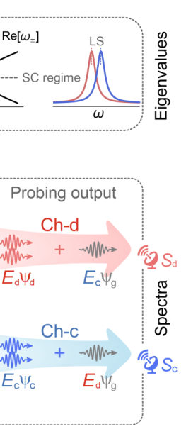
<figcaption class="paper-figure-caption"><b>Fig 2.</b> Fig. 2. Figure 2a illustrates the outputs of both channels in (i) the weak-coupling regime</figcaption>
</figure>
<figure class="paper-figure-card">
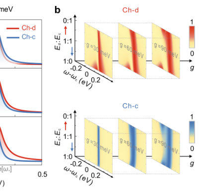
<figcaption class="paper-figure-caption"><b>Fig 3.</b> Fig. 2 | On-demand spectral manipulation. a, Normalized spectra from Ch-d and Ch-c</figcaption>
</figure>
<figure class="paper-figure-card">
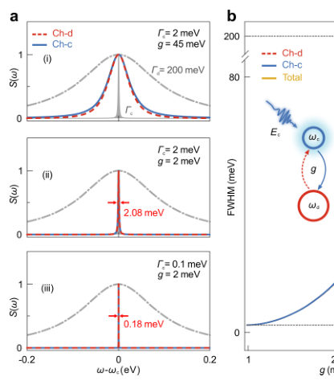
<figcaption class="paper-figure-caption"><b>Fig 4.</b> Fig. 3 | Substantial suppression of modal losses. a, Normalized output spectra from Ch-</figcaption>
</figure>
<figure class="paper-figure-card">
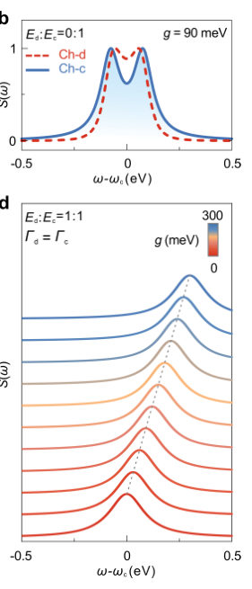
<figcaption class="paper-figure-caption"><b>Fig 5.</b> Fig. 4 | Disappearance of SRS. a,b, Normalized output spectra from Ch-d and Ch-c,</figcaption>
</figure>
</div>

<p><strong>Summary.</strong> The paper reveals that dissipation in non-Hermitian coupled quantum systems generates 'non-intrinsic' output signals when probed by weak external driving. By controlling the ratio of applied drives, researchers can achieve remarkable effects like suppressing energy loss or inducing giant frequency shifts instead of expected spectral splittings. This offers a new paradigm for manipulating quantum measurements.</p>
<p><strong>Why it may be interesting.</strong> This work provides profound insight into measurement backaction in open quantum systems, showing that the measurement process itself can be engineered to yield novel, controllable spectral features beyond intrinsic system properties.</p>
<details>
<summary>Detailed structure</summary>
<p><strong>Main problem.</strong> The work challenges the assumption that weak external driving used in measurement minimally disturbs a probed quantum system, especially when dissipation is present.</p>
<p><strong>Main result.</strong> Dissipation induces non-intrinsic outputs through interference between self-excitation and coupling-excitation spectral functions. This allows for on-demand manipulation of these outputs, including extreme loss suppression and giant frequency shifts.</p>
<p><strong>Method.</strong> The analysis uses theoretical derivations based on solving Heisenberg equations of motion under weak driving, employing the Laplace transform method to calculate spectral responses.</p>
<p><strong>Model / system.</strong> The system is modeled as a non-Hermitian quantum coupled system (e.g., plasmonic modes coupled to emitters) described by an effective Hamiltonian incorporating dissipation ($\Gamma$).</p>
<p><strong>Key observables.</strong> Non-intrinsic outputs ($S_{	ext{total}}$), eigenlevel splitting (LS), Spectral Rabi Splitting (SRS), Full Width at Half Maximum (FWHM), and spectral resonance frequency shifts.</p>
<p><strong>Important parameters / regimes.</strong> Ratio of weak external driving strengths ($E_\# : E_\%$), coupling strength ($g$), and dissipation rates ($\Gamma$).</p>
<p><strong>Assumptions / limitations.</strong> The interference effect is shown to originate directly from the presence of dissipation; it vanishes when $\Gamma=0$. The theory is validated across both quantum and classical coupled systems.</p>
<p><strong>Figures summary.</strong> Figures illustrate spectral manipulation by varying driving ratios, demonstrating loss suppression (linewidth compression) and the disappearance of SRS under balanced driving conditions. Other figures show frequency shifts in cavity structures.</p>
<p><strong>Paper structure.</strong> The paper progresses from establishing the non-intrinsic nature of outputs due to dissipation interference, detailing how external driving ratio controls these outputs, deriving a Pythagorean relation linking key spectral parameters, and finally confirming these effects with numerical simulations across various coupling regimes.</p>
</details>
<details>
<summary>Abstract</summary>
<p>Measurement provides access to exploring and understanding nature and finds widespread applications. It is generally believed that the weak external driving used in measurement introduces negligible disturbance to the intrinsic output of the probed system. Here, we reveal that dissipation in a non-Hermitian quantum coupled system induces interference between self-excitation and coupling-excitation spectral functions, giving rise to non-intrinsic outputs. These non-intrinsic outputs can be effectively manipulated by the ratio of weak external driving strengths applied to two channels, leading to significant phenomena: extreme suppression of dissipation by convergence effect of high-loss mode towards low-loss mode, and giant shift of resonant frequency instead of original spectral Rabi splitting. Crucially, we discover the Pythagorean relation linking eigenlevel splitting, spectral Rabi splitting and average total decay rate, enabling precise measurement of the eigenlevel splitting and coupling strength. Numerical simulations confirm that the interference outputs also exist in classical coupled systems. Our work provides a profound insight into measurement and non-Hermitian physics.</p>
</details>
<p><sub><a href="#top">↑ back to top</a></sub></p>

<p><a id="paper-2607.16186"></a></p>
<h3 id="nonequilibrium-thermodynamics-of-feedback-control-a-phase-space-perspective"><a href="http://arxiv.org/abs/2607.16186v1">Nonequilibrium thermodynamics of feedback-control: a phase-space perspective</a></h3>
<p><strong>Authors:</strong> José A. Almanza-Marrero<br>
<strong>Type:</strong> theory · <strong>Category:</strong> statistical mechanics · <strong>PDF:</strong> <a href="https://arxiv.org/pdf/2607.16186v1">https://arxiv.org/pdf/2607.16186v1</a><br>
<strong>Analysis basis:</strong> full PDF text, analyzed in chunks
<strong>Topic relevance:</strong> 🔥 <code>quantum measurements</code> <strong>5/5</strong> · 🔥 <code>measurement-induced transitions</code> <strong>4/5</strong> · <code>methods for driven-dissipative</code> <strong>3/5</strong> · <code>non-equilibrium dynamics</code> <strong>3/5</strong> · <code>non-equilibrium universality</code> <strong>2/5</strong> · <code>Keldysh / 2PI / non-Gaussian methods</code> <strong>1/5</strong> · <code>correlated / nonlocal dissipation</code> <strong>1/5</strong> · <code>driven-dissipative phase transition</code> <strong>1/5</strong> · <code>entanglement &amp; information structure</code> <strong>1/5</strong></p>
<div class="figure-strip-hint">↔ Scroll figures horizontally</div>
<div class="paper-figures-scroll">
<figure class="paper-figure-card">
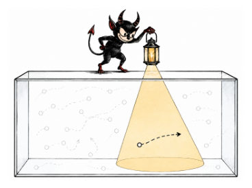
<figcaption class="paper-figure-caption"><b>Fig 1.</b> FIG. 1. A Maxwell’s demon shines its lantern on particles moving in the dark to gather information about their positions and velocities.</figcaption>
</figure>
<figure class="paper-figure-card">
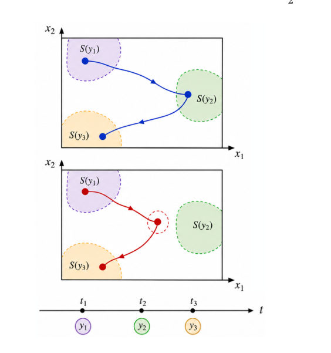
<figcaption class="paper-figure-caption"><b>Fig 2.</b> FIG. 2. Examples of trajectories that are compatible (blue) and incompatible (red) with a given measurement record. The colored regions denote the parts of phase space associ- ated with the outcomes obtained during the forward feedback- controlled process. In the backward experiment, the system evolves under the time-reversed protocol but without feed- back, so its intrinsic stochastic dynamics may generate tra- jectories that leave these allowed regions. Such trajectories are incompatible with the original measurement record, as il- lustrated by the red path.</figcaption>
</figure>
<figure class="paper-figure-card">
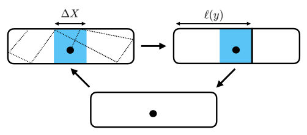
<figcaption class="paper-figure-caption"><b>Fig 3.</b> FIG. 3. Szilard engine with spatial resolution ∆X. The de- mon localizes the particle to within one pixel, so decreasing the pixel size allows it to extract more information.</figcaption>
</figure>
</div>

<p><strong>Summary.</strong> This paper generalizes fluctuation theorems to account for imperfect measurements and feedback control, introducing the concept of 'unavailable information.' By applying this framework to a finite-resolution Szilard engine, it demonstrates that while acquired information can diverge with precision, the extractable work remains bounded by the available information.</p>
<p><strong>Why it may be interesting.</strong> It provides a rigorous thermodynamic bound on work extraction that explicitly accounts for measurement limitations (unavailable information), which is crucial for understanding non-ideal quantum measurements or feedback protocols in open quantum systems.</p>
<details>
<summary>Detailed structure</summary>
<p><strong>Main problem.</strong> The work extends fluctuation relations for nonequilibrium processes involving measurement and feedback control, specifically addressing cases where measurements do not have full support over the system's phase space.</p>
<p><strong>Main result.</strong> A generalized detailed fluctuation relation is derived, showing that the extractable work in a finite-resolution Szilard engine remains finite even when the acquired information diverges logarithmically with resolution.</p>
<p><strong>Method.</strong> The derivation uses trajectory probabilities and introduces the concept of 'unavailable information' ($I_u$) to generalize standard fluctuation theorems for singular measurement channels.</p>
<p><strong>Model / system.</strong> The analysis is primarily developed using a stochastic thermodynamic system, exemplified by a Brownian particle in a 1D box undergoing measurements with finite spatial resolution ($\Delta X$).</p>
<p><strong>Key observables.</strong> Total entropy production ($S_{tot}$), trajectory transfer entropy ($I_c$), and generalized unavailable information ($I_u$).</p>
<p><strong>Important parameters / regimes.</strong> Measurement resolution ($\Delta X$) relative to system size ($L$); the ratio $r = \Delta X/L$.</p>
<p><strong>Assumptions / limitations.</strong> The standard fluctuation theorem is assumed to fail when measurement channels are singular or lack full support; calculations rely on approximations in the high-resolution limit.</p>
<p><strong>Figures summary.</strong> Figure 1 illustrates Maxwell's demon contextually. Figure 2 shows compatible vs. incompatible trajectories restricted by a measurement record. Figure 3 illustrates the Szilard engine with finite spatial resolution $\Delta X$.</p>
<p><strong>Paper structure.</strong> The paper first introduces the generalized fluctuation relation for feedback systems, then applies this framework to the concrete example of the finite-resolution Szilard engine, deriving explicit formulas for average information and work extraction.</p>
</details>
<details>
<summary>Abstract</summary>
<p>Maxwell demons can convert knowledge into thermodynamic advantage by using measurement-acquired information. However, standard formulations of this problem assume that the demon has access to the system's entire phase space, an assumption that fails in many practical applications. Here, I address this problem by deriving fluctuation relations for general feedback-controlled systems, including such singular cases. The central quantity is a generalized notion of unavailable information: a portion of the acquired information that cannot be used to extract useful work. Finally, a Szilard engine with finite resolution illustrates these results. In the high-resolution limit, the information acquired by the demon may diverge, yet the extractable work remains finite. This work shows that this occurs because an equally divergent amount of information becomes unavailable.</p>
</details>
<p><sub><a href="#top">↑ back to top</a></sub></p>

<p><a id="paper-2607.15978"></a></p>
<h3 id="parameter-estimation-in-a-continuously-monitored-non-markovian-quantum-system"><a href="http://arxiv.org/abs/2607.15978v1">Parameter Estimation in a Continuously Monitored Non-Markovian Quantum System</a></h3>
<p><strong>Authors:</strong> Erik L. André, Pharnam Bakhshinezhad, Patrick P. Potts, Luis A. Correa, Mohammad Mehboudi<br>
<strong>Type:</strong> theory · <strong>Category:</strong> other · <strong>PDF:</strong> <a href="https://arxiv.org/pdf/2607.15978v1">https://arxiv.org/pdf/2607.15978v1</a><br>
<strong>Analysis basis:</strong> full PDF text, analyzed in chunks
<strong>Topic relevance:</strong> 🔥 <code>quantum measurements</code> <strong>5/5</strong> · 🔥 <code>measurement-induced transitions</code> <strong>4/5</strong> · <code>methods for driven-dissipative</code> <strong>3/5</strong> · <code>correlated / nonlocal dissipation</code> <strong>2/5</strong> · <code>non-equilibrium dynamics</code> <strong>2/5</strong> · <code>Keldysh / 2PI / non-Gaussian methods</code> <strong>1/5</strong> · <code>driven-dissipative phase transition</code> <strong>1/5</strong> · <code>entanglement &amp; information structure</code> <strong>1/5</strong> · <code>quantum optics experiment</code> <strong>1/5</strong></p>
<div class="figure-strip-hint">↔ Scroll figures horizontally</div>
<div class="paper-figures-scroll">
<figure class="paper-figure-card">
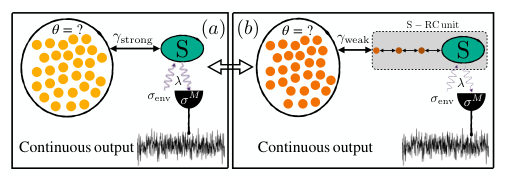
<figcaption class="paper-figure-caption"><b>Fig 1.</b> Figure 1. (a) We consider a continuously monitored system that is strongly coupled to a bath and therefore exhibits non- Markovian dynamics. The output signal is not straightfor- wardly interpretable; hence it cannot be immediately used to infer unknown bath parameters. (b) The reaction coordi- nate mapping resolves this issue by recasting the problem as a Markovian one, allowing the output signal to be analyzed efficiently. Our proposal works for arbitrary Gaussian mea- surements, represented by the covariance matrix σM (e.g., homodyne detection), performed on an environmental mode initially prepared in a Gaussian state represented by its co- variance matrix σenv.</figcaption>
</figure>
<figure class="paper-figure-card">
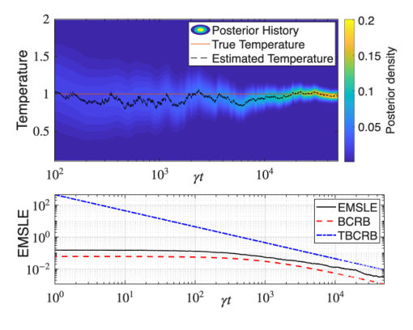
<figcaption class="paper-figure-caption"><b>Fig 2.</b> Figure 2. Top: A sample Monte Carlo simulation of the ho- modyne outcomes is used for Bayesian inference. The con- tour plot shows the posterior density function conditioned on the observed data. Here, the red and black lines indi- cate the true and estimated temperatures, respectively. As more data are collected, the posterior becomes sharper and the estimator is more precise (on average). Bottom: We es- timate the EMSLE using 320 Monte Carlo simulations. We use the Fisher information to lower bound the EMSLE us- ing the Bayesian Cramér-Rao bound (red dashed). We also use the FI to evaluate the tight Bayesian Cramér-Rao bound (blue dashed-dotted). The bound holds only for unbiased es-...</figcaption>
</figure>
<figure class="paper-figure-card">
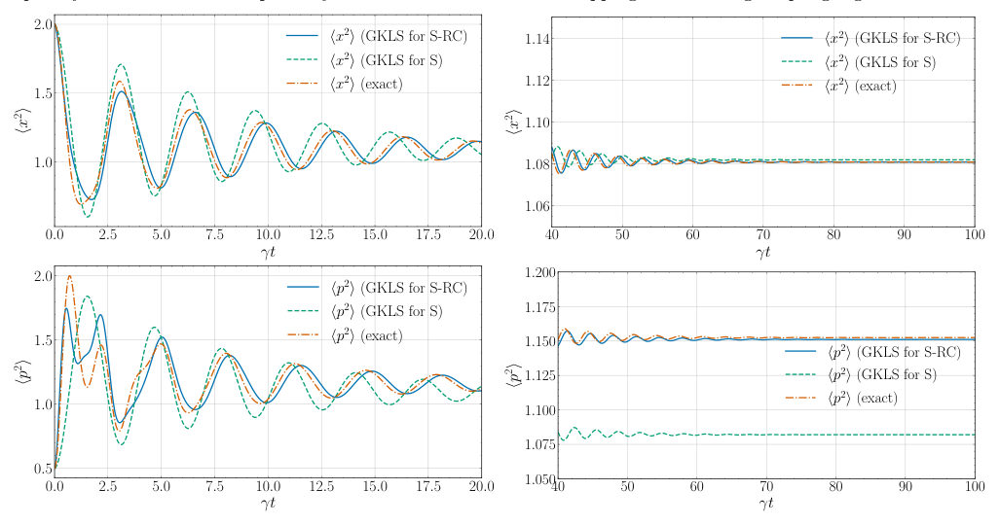
<figcaption class="paper-figure-caption"><b>Fig 3.</b> Figure 3. Comparison of the position and momentum variances evaluated using the exact quantum Langevin equation, the global RC master equation, and the local bare master equation. System parameters are set to ΩS = 1.0, α1 = 1, α2 = 10, γ = 1, and T = 1.</figcaption>
</figure>
</div>

<p><strong>Summary.</strong> This paper develops a novel method to estimate unknown parameters in quantum systems undergoing continuous monitoring when the underlying dynamics are non-Markovian. By employing a Reaction Coordinate mapping, the authors transform the difficult non-Markovian problem into an augmented system whose evolution is mathematically tractable using standard Bayesian and Kalman filtering techniques. This allows for precise quantitative analysis of physical processes like bath thermometry.</p>
<p><strong>Why it may be interesting.</strong> This work provides a powerful theoretical framework for extracting precise physical parameters from noisy measurements on open quantum systems where standard Markovian assumptions fail. It bridges advanced concepts in quantum estimation theory with complex non-Markovian dynamics.</p>
<details>
<summary>Detailed structure</summary>
<p><strong>Main problem.</strong> The core challenge is extending quantum parameter estimation techniques from well-understood Markovian dynamics to complex, non-Markovian regimes using continuous monitoring data.</p>
<p><strong>Main result.</strong> The authors propose a Reaction Coordinate (RC) mapping that transforms the problem into an augmented system whose evolution remains CP-divisible, allowing for the application of standard Bayesian inference tools.</p>
<p><strong>Method.</strong> They utilize the RC mapping to embed the non-Markovian dynamics into a larger, effectively Markovian S–RC unit, enabling the use of quantum Kalman filtering and Bayesian estimation techniques.</p>
<p><strong>Model / system.</strong> The model involves a linear bosonic system strongly coupled to an environment bath, monitored via Gaussian continuous measurements like homodyne detection. The analysis focuses on the evolution of the System-Reaction Coordinate (S–RC) unit.</p>
<p><strong>Key observables.</strong> Fisher information, estimation precision scaling, posterior density function $p(	heta|\# 
angle_{W m})$, and Mean Square Logarithmic Error ($  ext{EMSLE}$).</p>
<p><strong>Important parameters / regimes.</strong> The parameter being estimated is often temperature ($   heta$ or $T$), and the dynamics are characterized by drift ($A$) and diffusion ($D$) matrices.</p>
<p><strong>Assumptions / limitations.</strong> The method assumes linearity, Gaussian measurements, and relies on the RC mapping to simplify the non-Markovian evolution into a CP-divisible form.</p>
<p><strong>Figures summary.</strong> Figures illustrate how the RC mapping resolves the difficulty of interpreting non-Markovian output signals for parameter inference. Simulations show the posterior density sharpening over time and $  ext{EMSLE}$ approaching theoretical bounds.</p>
<p><strong>Paper structure.</strong> The paper first establishes the difficulty in non-Markovian estimation, then introduces the RC mapping to achieve CP-divisibility. It details the application of Bayesian theory using quantum Kalman filtering for the S–RC unit, culminating in analytical results and a demonstration via bosonic bath thermometry.</p>
</details>
<details>
<summary>Abstract</summary>
<p>Continuous monitoring is a powerful tool for analyzing quantum systems and is increasingly used as a non-demolition technique in quantum metrology. In this context, noisy data acquired through continuous monitoring can be used to precisely pinpoint unknown parameters of the system. However, extending the theoretical framework that connects these data to the underlying parameters beyond Markovian dynamics is notoriously difficult, primarily because such dynamics cannot be expressed as completely positive divisible maps. To overcome this, we propose a method based on the reaction coordinate mapping to extend these parameter-estimation techniques beyond the Markovian regime. Our approach specifically targets linear systems with non-Markovian dynamics undergoing Gaussian continuous measurements, such as homodyne detection. Within this framework, we analyze Bayesian estimation and provide an analytical expression for the Fisher information, alongside the asymptotic scaling of the estimation precision for arbitrary parameters. Finally, we demonstrate the efficacy of our method through the example of thermometry of a bosonic bath.</p>
</details>
<p><sub><a href="#top">↑ back to top</a></sub></p>

<p><a id="paper-2607.15350"></a></p>
<h3 id="fragmented-eth-prethermalization-timescales-and-ensemble-inequivalence"><a href="http://arxiv.org/abs/2607.15350v1">Fragmented ETH: Prethermalization, Timescales, and Ensemble Inequivalence</a></h3>
<p><strong>Authors:</strong> C. L. Sriram, Soumya Kanti Pal, Lea F. Santos<br>
<strong>Type:</strong> theory · <strong>Category:</strong> statistical mechanics · <strong>PDF:</strong> <a href="https://arxiv.org/pdf/2607.15350v1">https://arxiv.org/pdf/2607.15350v1</a><br>
<strong>Analysis basis:</strong> full PDF text, analyzed in chunks
<strong>Topic relevance:</strong> 🔥 <code>scars &amp; prethermalization</code> <strong>5/5</strong> · <code>non-equilibrium dynamics</code> <strong>3/5</strong> · <code>non-equilibrium universality</code> <strong>2/5</strong> · <code>Keldysh / 2PI / non-Gaussian methods</code> <strong>1/5</strong> · <code>analog quantum simulation</code> <strong>1/5</strong> · <code>driven-dissipative phase transition</code> <strong>1/5</strong> · <code>entanglement &amp; information structure</code> <strong>1/5</strong> · <code>methods for driven-dissipative</code> <strong>1/5</strong></p>
<div class="figure-strip-hint">↔ Scroll figures horizontally</div>
<div class="paper-figures-scroll">
<figure class="paper-figure-card">
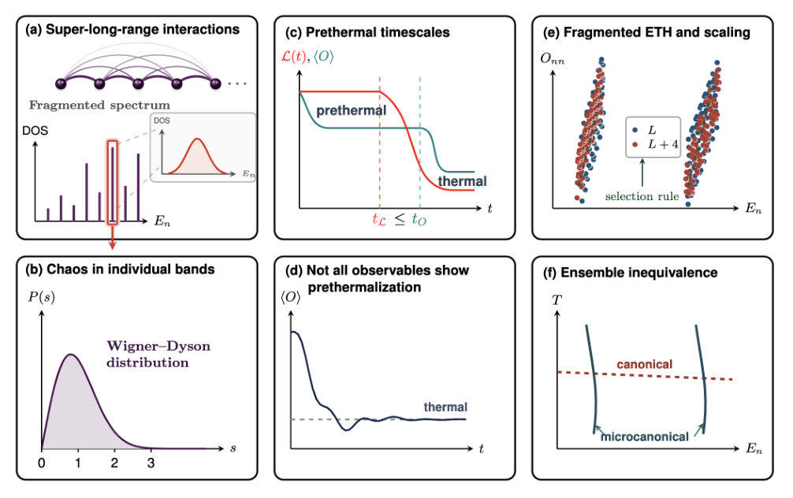
<figcaption class="paper-figure-caption"><b>Fig 1.</b> FIG. 1. Schematic roadmap of the main concepts and results presented in this work. The panels correspond to items (a)–(f) discussed in the overview in Sec. II</figcaption>
</figure>
<figure class="paper-figure-card">
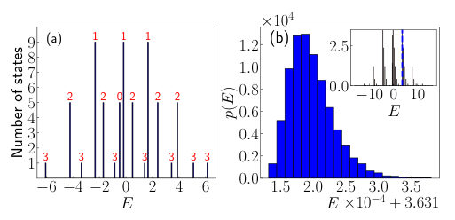
<figcaption class="paper-figure-caption"><b>Fig 2.</b> FIG. 2. Density of states for (a) the whole spectrum of the LMG Hamiltonian ˆH(0) LMG in Eq. (3) for L = 6 sites. The value of s for each band is indicated in red. (b) Density of states for a single energy band of ˆH(α) in Eq. (1) for L = 16 and α = 10−4. The distribution is a skewed Gaussian. The inset shows that the full spectrum of ˆH(α) retains the band structure of the fully connected model, and the vertical dashed blue line shows the band which has been magnified in the main panel.</figcaption>
</figure>
<figure class="paper-figure-card">
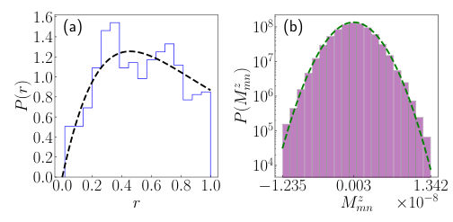
<figcaption class="paper-figure-caption"><b>Fig 3.</b> FIG. 3. (a) Distribution of the ratio of consecutive level spac- ings and (b) distribution of the off-diagonal elements of the total z-magnetization M z for a single energy band of ˆH(α); L = 16, α = 10−4. In (b): 264 eigenstates are selected in the middle of the energy band.</figcaption>
</figure>
<figure class="paper-figure-card">
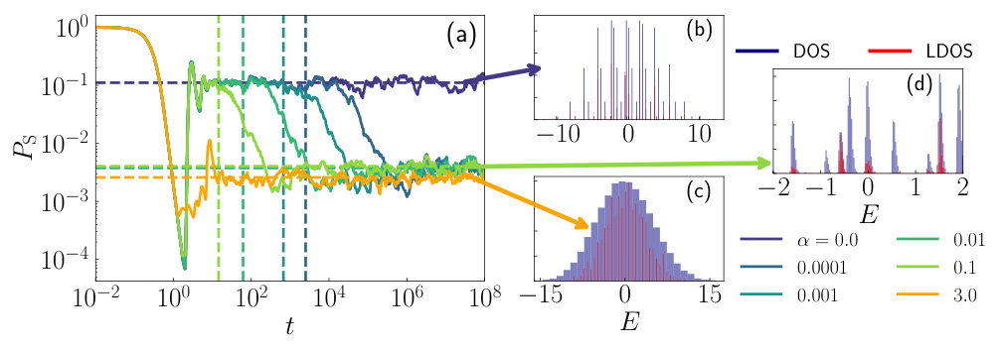
<figcaption class="paper-figure-caption"><b>Fig 4.</b> FIG. 4. (a) Evolution of the survival probability, PS(t), for a product state in the z-basis for different values of α shown in the legend at the bottom right of the figure. Horizontal lines indicate the saturation values; PS (α=0) coincides with the prethermal plateau for 0 &lt; α &lt; 1. Vertical dashed lines mark the analytical predictions for the prethermal lifetime derived in Eq. (27). Panels (b), (c) and (d) show the DOS (blue) and LDOS (red) for (b) all-to-all couplings, α = 0, (c) effective short-range interactions, α = 3, and (d) super-long-range interactions, α = 0.1. The LDOS has been scaled to enable visibility on the same scale as the DOS. Panel (d) shows a small slice of the total...</figcaption>
</figure>
<figure class="paper-figure-card">
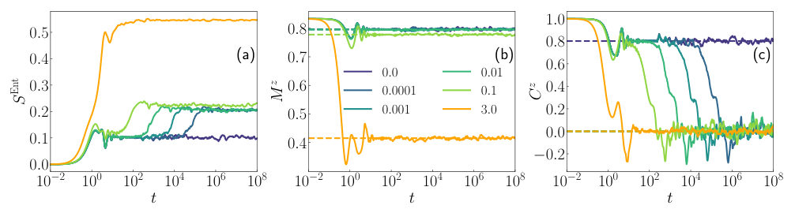
<figcaption class="paper-figure-caption"><b>Fig 5.</b> FIG. 5. Evolution of the (a) entanglement entropy, (b) magnetization along the z-direction Mz and (c) first moment of the excitation density Cz for an initial product state and different interaction-range exponets α, as indicated in panel (b). The magnetization does not exhibit a prethermal plateau.</figcaption>
</figure>
</div>

<p><strong>Summary.</strong> This paper analyzes how quantum systems with long-range interactions approach equilibrium by developing the fragmented ETH (fETH). It shows that Hilbert space fragmentation causes slow prethermalization and predicts ensemble inequivalence because different statistical ensembles sample different parts of the energy spectrum. The work provides analytical tools to quantify these non-equilibrium dynamics.</p>
<p><strong>Why it may be interesting.</strong> This work directly addresses non-equilibrium dynamics in complex many-body systems, providing a refined theoretical framework (fETH) for understanding thermalization when standard assumptions of ergodicity break down due to system structure or interactions.</p>
<details>
<summary>Detailed structure</summary>
<p><strong>Main problem.</strong> The paper investigates how finite quantum systems with strong long-range interactions approach thermal equilibrium when global ergodicity is lost due to Hilbert space fragmentation.</p>
<p><strong>Main result.</strong> It proposes the fragmented ETH (fETH) as a band-resolved description of thermalization, identifying that ensemble inequivalence arises because microcanonical ensembles are confined to single energy bands while canonical ensembles sample across multiple bands.</p>
<p><strong>Method.</strong> The authors develop a perturbative theory to analytically predict prethermal plateau heights and timescales, alongside developing a symmetry-constrained finite-size scaling framework for fETH.</p>
<p><strong>Model / system.</strong> The study focuses on finite quantum systems with super long-range interactions (e.g., the spin-1/2 transverse-field Ising chain). The Hamiltonian exhibits fragmentation due to nearly conserved quantities inherited from the fully connected limit.</p>
<p><strong>Key observables.</strong> Prethermal plateau height and timescale, survival probability ($P_S(t)$), microcanonical vs. canonical ensemble predictions.</p>
<p><strong>Important parameters / regimes.</strong> The interaction decay exponent $\alpha$ (super-long-range regime $\alpha < d$), system size $N$, and the ratio of coupling strengths to local fields.</p>
<p><strong>Assumptions / limitations.</strong> The hybridization between neighboring energy bands is assumed to be weak enough ($\alpha < d$) for the band structure approximation to hold; conventional ETH fails due to fragmentation.</p>
<p><strong>Figures summary.</strong> Figure 1 schematically maps out spectrum fragmentation, quantum chaos within bands, prethermal timescales, conditions governing prethermalization, and the symmetry-imposed selection rule for fETH.</p>
<p><strong>Paper structure.</strong> The paper progresses by first establishing the physical problem (fragmentation due to long-range interactions), then proposing fETH as the necessary modification to ETH, deriving analytical tools (perturbative theory), and finally demonstrating the consequences of this fragmentation on equilibrium statistical mechanics via ensemble inequivalence.</p>
</details>
<details>
<summary>Abstract</summary>
<p>We investigate how finite quantum systems with strong long-range interactions approach thermal equilibrium. Nearly conserved quantities inherited from the fully connected limit fragment the Hilbert space and give rise to a many-body spectrum split into energy bands. As a result, equilibration becomes anomalously slow and proceeds through long-lived prethermal plateaus. This two-stage equilibration process is, however, not universal. We uncover the mechanism that determines which observables and initial states exhibit, or evade, prethermal plateaus. We also develop a perturbative theory that provides analytical expressions for both the height of the prethermal plateau and its timescale. Despite the lack of global ergodicity, quantum chaos develops within individual energy bands, enabling the definition of microcanonical ensembles within the bands. This supports a band-resolved formulation of thermalization, which we term fragmented eigenstate thermalization hypothesis (fETH). Unlike conventional ETH, finite-size scaling in fETH obeys a symmetry-imposed selection rule that restricts which system sizes can be compared. This band-resolved description has direct consequences for equilibrium statistical mechanics. While microcanonical ensembles remain confined to a single band, canonical ensembles mix different bands. This mismatch explains ensemble inequivalence without invoking equilibrium phase transitions. Our results apply to a broad class of Hamiltonians exhibiting Hilbert-space fragmentation.</p>
</details>
<p><sub><a href="#top">↑ back to top</a></sub></p>

<p><a id="paper-2607.16047"></a></p>
<h3 id="rigorous-time-dependent-hamiltonian-learning-via-continuous-weak-measurements"><a href="http://arxiv.org/abs/2607.16047v1">Rigorous Time-dependent Hamiltonian Learning via Continuous Weak Measurements</a></h3>
<p><strong>Authors:</strong> Jesús Jiménez-Rodríguez, Giacomo Franceschetto, Antonio Acín, Luciano Pereira<br>
<strong>Type:</strong> theory · <strong>Category:</strong> quantum information and computing · <strong>PDF:</strong> <a href="https://arxiv.org/pdf/2607.16047v1">https://arxiv.org/pdf/2607.16047v1</a><br>
<strong>Analysis basis:</strong> full PDF text, analyzed in chunks
<strong>Topic relevance:</strong> 🔥 <code>quantum measurements</code> <strong>5/5</strong> · <code>measurement-induced transitions</code> <strong>3/5</strong> · <code>analog quantum simulation</code> <strong>1/5</strong> · <code>driven-dissipative phase transition</code> <strong>1/5</strong> · <code>methods for driven-dissipative</code> <strong>1/5</strong></p>
<div class="figure-strip-hint">↔ Scroll figures horizontally</div>
<div class="paper-figures-scroll">
<figure class="paper-figure-card">
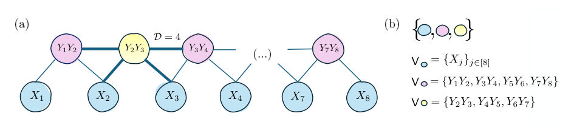
<figcaption class="paper-figure-caption"><b>Fig 1.</b> Figure 1: Interaction graph for the transverse field Ising model-like chain. Vertices represent the Hamiltonian terms Xj and YjYj+1, and edges connect terms with overlapping support. Panel (a) shows the graph structure, with maximum degree D = 4. Panel (b) gives a valid three-coloring, which partitions the terms into disjoint sets that can be addressed in parallel in the probe-construction step.</figcaption>
</figure>
<figure class="paper-figure-card">
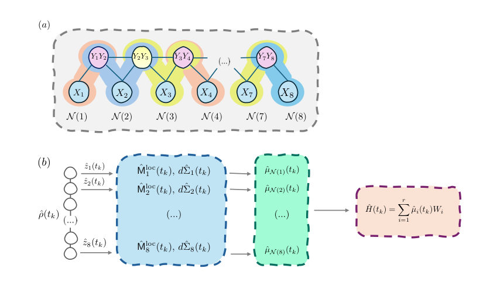
<figcaption class="paper-figure-caption"><b>Fig 2.</b> Figure 2: Local structure of the weak measurements reconstruction protocol. Panel (a) shows the active neighborhoods N(j) for the TFIM-like chain, highlighted on the interaction graph. Each active neighborhood contains the Hamiltonian terms contributing to the first-order evolution of the monitored record at site j. Panel (b) sketches the reconstruction at a fixed time tk. The weak measurement records ˆzj(tk) are converted into finite-difference data vectors d ˆΣj(tk), which define local inverse problems with matrices Mloc j (tk). Solving these local problems gives estimates of the neighborhood coefficients ˆµN (j)(tk), which are then combined into the global Hamiltonian estimate ˆH(tk) = P</figcaption>
</figure>
<figure class="paper-figure-card">
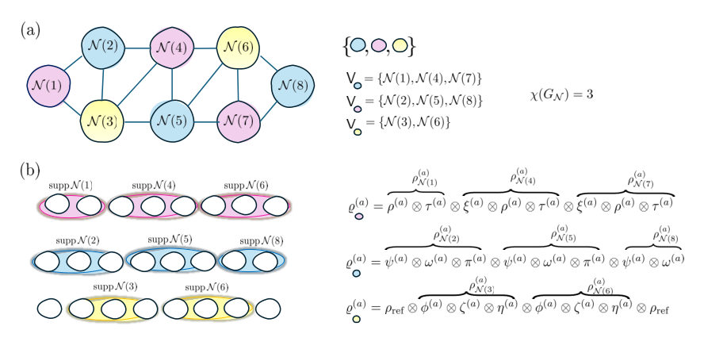
<figcaption class="paper-figure-caption"><b>Fig 3.</b> Figure 3: Graph-coloring construction of separable probe configurations for the TFIM-like chain. Panel (a) shows the active- neighborhood graph GN , whose vertices are the local inverse problems N(j). The three-coloring χ(GN ) = 3 groups neighbor- hoods with disjoint physical support. Panel (b) displays these supports on the physical qubit chain and shows the corresponding global product probes: neighborhoods with the same color are prepared simultaneously, while spectator qubits are assigned fixed reference states. Repeating the construction for the local probe labels a gives the separable ensemble used to initialize all local inversions.</figcaption>
</figure>
<figure class="paper-figure-card">
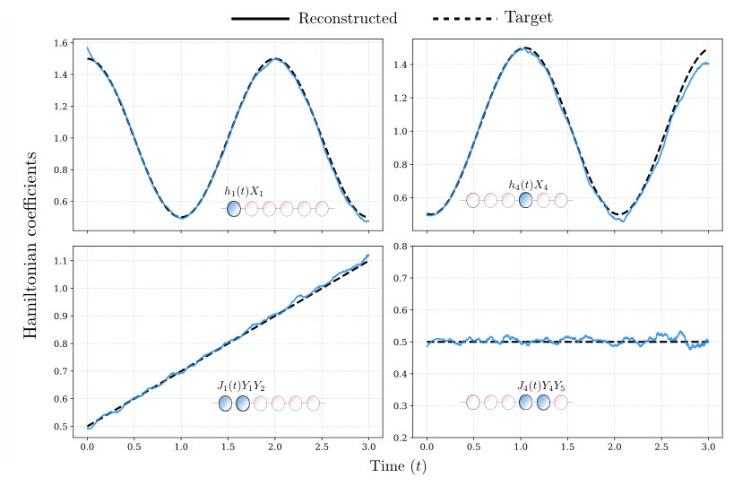
<figcaption class="paper-figure-caption"><b>Fig 4.</b> Figure 4: Time-dependent Hamiltonian reconstruction from weak measurement records. Dashed black curves show the target coefficients, while solid colored curves show the reconstructed trajectories. The panels display representative local fields hj(t) and nearest-neighbor couplings Jj(t). The protocol tracks the coefficient trajectories over the reconstruction window, with larger fluctuations appearing for terms whose local inverse problems are more sensitive to noise and conditioning effects.</figcaption>
</figure>
<figure class="paper-figure-card">
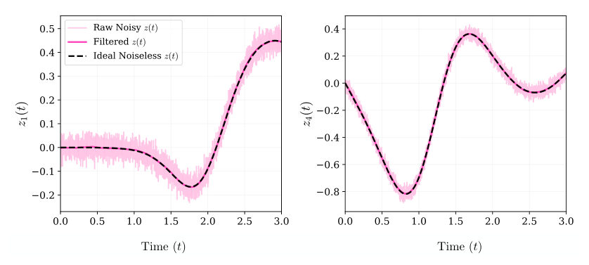
<figcaption class="paper-figure-caption"><b>Fig 5.</b> Figure 5: Preprocessing of averaged weak measurement records prior to reconstruction. The raw records contain visible finite- sampling fluctuations, while the Savitzky–Golay filtered signals closely track the ideal noiseless trajectories. This filtering step stabilizes the finite-difference estimates used in the inversion protocol.</figcaption>
</figure>
</div>

<p><strong>Summary.</strong> This paper presents a rigorous protocol to learn the time-dependent Hamiltonian of a many-body quantum system using continuous weak measurements. By leveraging the sparsity (locality) of interactions, it reduces the complex global problem into smaller, solvable local inverse problems. The key contribution is providing mathematically proven error bounds and sample complexity guarantees for this process.</p>
<p><strong>Why it may be interesting.</strong> This work directly addresses a critical bottleneck in quantum hardware characterization: reliably determining time-varying control parameters from noisy measurements. The theoretical framework for sparse reconstruction is highly valuable for scaling up diagnostics on larger quantum processors.</p>
<details>
<summary>Detailed structure</summary>
<p><strong>Main problem.</strong> The central problem is developing a rigorous, experimentally feasible protocol to reconstruct time-dependent many-body Hamiltonians H(t) from continuous weak measurement records.</p>
<p><strong>Main result.</strong> The authors establish that by exploiting Hamiltonian locality (sparsity), the global reconstruction problem decomposes into manageable local inverse problems, yielding explicit error bounds and sample complexity theorems.</p>
<p><strong>Method.</strong> The protocol uses graph coloring to decompose the system's interaction structure, reducing the required probe measurements from system size dependence to a dependency on the local interaction connectivity degree. Error analysis rigorously separates statistical noise from deterministic bias.</p>
<p><strong>Model / system.</strong> The study considers an $n$-qubit system whose dynamics are governed by a time-dependent Hamiltonian H(t) with a sparse Pauli structure. Measurements are simulated via continuous weak monitoring of local Pauli observables ($\sigma^{(j)}_z$).</p>
<p><strong>Key observables.</strong> Time-dependent coefficients $\mu_i(t)$ defining the Hamiltonian, and the measured expectation values $\hat{z}_j(t)$ from noisy measurement trajectories.</p>
<p><strong>Important parameters / regimes.</strong> The interaction connectivity degree $D$, the weak measurement rate ($\Gamma_j$), and the time step $\Delta t$ are crucial parameters governing error bounds.</p>
<p><strong>Assumptions / limitations.</strong> The primary assumption is the locality (sparsity) of interactions in the Hamiltonian. The analysis also assumes sufficient regularity for bounding local truncation errors.</p>
<p><strong>Figures summary.</strong> Figure 1 illustrates the interaction graph for a TFIM chain, showing vertices as Pauli terms and edges based on support overlap, leading to a maximum degree $D=4$. Figure 8 shows the full reconstruction of Hamiltonian coefficients for $n=6$ qubits.</p>
<p><strong>Paper structure.</strong> The paper progresses from defining the weak measurement model and dynamics (Chunk 2) to developing the core protocol by localizing the problem via graph coloring. It then provides rigorous error analysis, deriving bounds on state estimation errors ($\|\hat{
ho} - 
ho\|_1$) and sample complexity, culminating in numerical validation.</p>
</details>
<details>
<summary>Abstract</summary>
<p>Characterizing the Hamiltonian that a quantum processor actually implements is central to calibrating and validating current quantum hardware. Many devices, however, operate with generators that are time dependent by design. Here we develop a rigorous and experimentally friendly protocol for learning time-dependent many-body Hamiltonians from continuous weak measurement records. The key observation is that interaction sparsity reduces the global reconstruction to a set of local inverse problems, whose number is controlled by the interaction connectivity rather than by the system size. Pure separable probe states suffice to drive these inversions, and a graph-coloring construction embeds them into a small number of global product-state preparations. We derive explicit reconstruction-error bounds and a sample-complexity theorem that cleanly separates the finite-sampling statistical noise from the deterministic bias of the iterative state update, and we validate the protocol on time-dependent spin chains with up to $n=8$ qubits. Beyond these results, our analysis provides a rigorous foundation for time-dependent Hamiltonian learning from continuous monitoring in many-body systems, establishing a framework that extends naturally to many platforms and probe ensembles.</p>
</details>
<p><sub><a href="#top">↑ back to top</a></sub></p>

<p><a id="paper-2607.15767"></a></p>
<h3 id="controlling-charge-and-spin-currents-through-nonreciprocal-dissipative-processes"><a href="http://arxiv.org/abs/2607.15767v1">Controlling charge and spin currents through nonreciprocal dissipative processes</a></h3>
<p><strong>Authors:</strong> Catalin-Mihai Halati, Jean-Sébastien Bernier<br>
<strong>Type:</strong> theory · <strong>Category:</strong> other · <strong>PDF:</strong> <a href="https://arxiv.org/pdf/2607.15767v1">https://arxiv.org/pdf/2607.15767v1</a><br>
<strong>Analysis basis:</strong> full PDF text, analyzed in chunks
<strong>Topic relevance:</strong> 🔥 <code>methods for driven-dissipative</code> <strong>4/5</strong> · 🔥 <code>spintronics-quantum-optics interface</code> <strong>4/5</strong> · <code>analog quantum simulation</code> <strong>3/5</strong> · <code>correlated / nonlocal dissipation</code> <strong>3/5</strong> · <code>driven-dissipative phase transition</code> <strong>3/5</strong> · <code>exotic spin models in light-matter</code> <strong>3/5</strong> · <code>non-equilibrium dynamics</code> <strong>3/5</strong> · <code>Keldysh / 2PI / non-Gaussian methods</code> <strong>2/5</strong> · <code>non-equilibrium universality</code> <strong>2/5</strong> · <code>Kondo &amp; dissipative impurity</code> <strong>1/5</strong> · <code>entanglement &amp; information structure</code> <strong>1/5</strong> · <code>measurement-induced transitions</code> <strong>1/5</strong> · <code>quantum measurements</code> <strong>1/5</strong></p>
<div class="figure-strip-hint">↔ Scroll figures horizontally</div>
<div class="paper-figures-scroll">
<figure class="paper-figure-card">
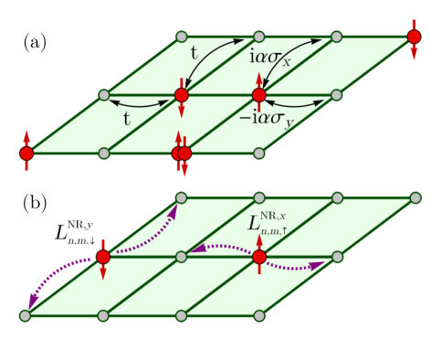
<figcaption class="paper-figure-caption"><b>Fig 1.</b> FIG. 1: Sketch of the model considering spinful fermions in a two-dimensional lattice. The fermionic particles experience Hamiltonian, Eq. (1), and dissipative processes, Eq. (3). In panel (a), we sketch the coherent tunneling processes with amplitude t which are spatially isotropic and do not change the spin state of the particles, and the coherent spin-orbit Rashba coupling of amplitude α for which the tunneling is associated with a spin flip process for which the phase de- pends on the spatial direction (see Sec. II A). In panel (b), we sketch the action of two of the dissipative channels considered, Eq. (4). The jump operators depicted act differently on the two spin states, with LNR,x...</figcaption>
</figure>
<figure class="paper-figure-card">
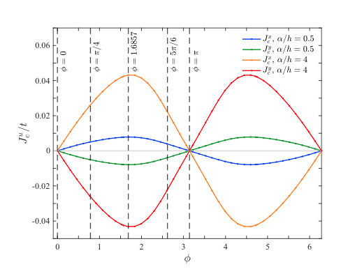
<figcaption class="paper-figure-caption"><b>Fig 2.</b> FIG. 2: Steady-state charge currents in the x-direction, Jx c , and y-direction, Jy c , as a function of the phase ϕ for two ra- tios α/h = {0.5, 4}, no dephasing (Γd = 0) and small ΓNR considering a half-filled system of size L × L = 10 × 10 with periodic boundary conditions. The amplitude and direction of the charge currents are strongly dependent on ϕ. The ampli- tude of both currents also increases with α/h. For 0 &lt; ϕ &lt; π, Jx c flows in the positive x-direction while Jy c flows in the neg- ative y-direction, while the flows are reversed for π &lt; ϕ &lt; 2π. Both currents are zero at ϕ = {0, π, 2π}.</figcaption>
</figure>
<figure class="paper-figure-card">
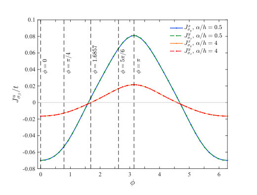
<figcaption class="paper-figure-caption"><b>Fig 3.</b> FIG. 4: Steady-state spin-y component of the spin current in the x-direction, Jx σy, and spin-x component of the spin cur- rent in the y-direction, Jy σx, as a function of the phase ϕ for two ratios α/h = {0.5, 4}, small ΓNR and Γd = 0 consider- ing a half-filled system of size L × L = 10 × 10 with periodic boundary conditions. Both spin currents Jx σy and Jy σx have the same value and the direction of both currents can be re- versed by changing ϕ.</figcaption>
</figure>
<figure class="paper-figure-card">
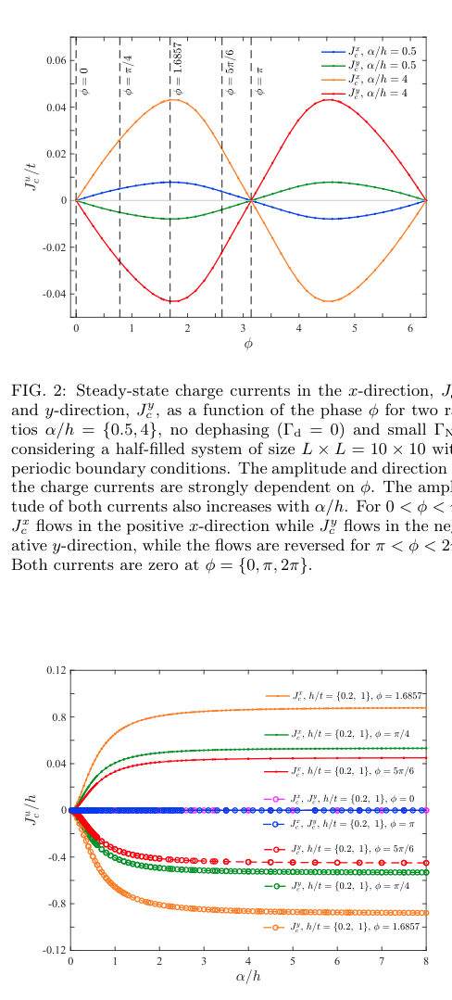
<figcaption class="paper-figure-caption"><b>Fig 4.</b> FIG. 3: Ratio of the steady-state charge currents in the x- direction, Jx c /h, and y-direction, Jy c /h, as a function of the ratio of the Rashba coupling to the magnetic field, α/h, in the absence of dephasing (Γd = 0), small ΓNR, two field strengths h/t = 0.2, 1 and five presentative ϕ values: 0, π/4, 1.6875, 5π/6 and π. The system is half-filled and of size L × L = 10 × 10 with periodic boundary conditions. Both charge currents are zero when ϕ is equal to 0 and π. For the other ϕ considered, when the charge current in x flows in the positive direction, the current in y flows in the negative di- rection.</figcaption>
</figure>
<figure class="paper-figure-card">
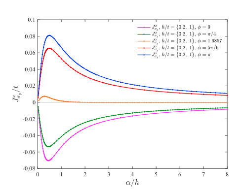
<figcaption class="paper-figure-caption"><b>Fig 5.</b> FIG. 5: Steady-state spin-y component of the spin current in the x-direction as a function of the ratio of the Rashba cou- pling to the magnetic field, α/h, in the absence of dephasing (Γd = 0) and small ΓNR, two field strengths h/t = 0.2, 1 and five presentative ϕ values: 0, π/4, 1.6875, 5π/6 and π. The system is half-filled and of size L × L = 10 × 10 with periodic boundary conditions. For ϕ = 1.6875, the spin current goes to zero as α/h increases. For all five values of ϕ, the spin current presents a maximum for α/h &lt; 1.</figcaption>
</figure>
</div>

<p><strong>Summary.</strong> The paper demonstrates a method to control charge and spin currents in fermionic quantum systems by engineering nonreciprocal dissipative couplings. Using the GKSL master equation formalism, the authors show that specific dissipation channels can induce finite currents even when starting from a coherent Hamiltonian. This mechanism is robust against dephasing noise, offering a pathway for current manipulation using engineered open system dynamics.</p>
<p><strong>Why it may be interesting.</strong> This work directly addresses open quantum systems dynamics in condensed matter contexts, showing how engineered dissipation can mimic or enhance coherent transport phenomena like spin-charge conversion, which is highly relevant to spintronics and topological materials research.</p>
<details>
<summary>Detailed structure</summary>
<p><strong>Main problem.</strong> The study investigates how charge and spin currents can be generated and precisely controlled in a quantum system by utilizing nonreciprocal dissipative processes.</p>
<p><strong>Main result.</strong> The combination of specific nonreciprocal jump operators is sufficient to generate both charge and spin currents, and tuning the nonreciprocity allows switching the dominant transport mechanism between spin and charge.</p>
<p><strong>Method.</strong> The analysis employs the Gorini-Kossakowski-Sudarshan-Lindblad (GKSL) master equation formalism within the weakly dissipative coupling regime, utilizing a time-dependent generalized Gibbs ensemble approach to find steady states.</p>
<p><strong>Model / system.</strong> The model is a two-dimensional spinful fermionic atom quantum system on a square lattice. The dynamics are governed by a Hamiltonian incorporating kinetic, Rashba SOC, and Zeeman terms, coupled to nonreciprocal dissipative jump operators.</p>
<p><strong>Key observables.</strong> Charge current ($J^c$) and Spin current ($J^{\sigmaeta}$), derived using U(1) and SU(2) gauge transformations.</p>
<p><strong>Important parameters / regimes.</strong> Nonreciprocity strength (phases $\phi$), tunneling amplitude ($t$), Rashba coupling ($\alpha$), magnetic field ($h$), and the degree of dephasing noise.</p>
<p><strong>Assumptions / limitations.</strong> The analysis is performed in the weak dissipative coupling regime, and approximations are made for small phase variations and small angles during gauge transformations.</p>
<p><strong>Figures summary.</strong> Figure 1 sketches the model setup, illustrating coherent tunneling and Rashba coupling alongside the action of two specific nonreciprocal dissipative channels required to induce currents.</p>
<p><strong>Paper structure.</strong> The paper proceeds by first defining the physical model (Hamiltonian and dissipation), then deriving the current operators using gauge transformations, detailing the generalized Gibbs ensemble method for steady states, and finally presenting results on current generation, necessary ingredients, and noise robustness.</p>
</details>
<details>
<summary>Abstract</summary>
<p>We investigate the generation and control of both charge and spin currents via nonreciprocal dissipative mechanisms in a two-dimensional spinful fermionic atom quantum system with broken inversion and time-reversal symmetries. Within the Gorini-Kossakowski-Sudarshan-Lindblad master equation formalism and using an approach based on the time-dependent generalized Gibbs ensemble, we identify in the weak dissipative coupling regime the minimal set of nonreciprocal jump operators required to induce charge and spin currents and to control both their direction and magnitude. We find that in the presence of finite tunneling, Rashba coupling and magnetic field, the combine application of two jump operators nonreciprocally coupling each spin species to a different spatial direction of motion is sufficient to generate both types of current. Furthermore, by tuning the degree of nonreciprocity of the jump operators we modify the dominant transport mechanism from spin to charge. Finally, we checked that this nonreciprocal current generation mechanism is robust to the application of dephasing noise as even in the presence of this additional dissipative process the steady-state occupation distributions for the quasiparticle modes of the Hamiltonian remains non-trivial, an essential requirement to obtain non-zero currents.</p>
</details>
<p><sub><a href="#top">↑ back to top</a></sub></p>

<p><a id="paper-2607.16039"></a></p>
<h3 id="deconfined-quantum-critical-point-in-a-dissipative-spin-12-chain"><a href="http://arxiv.org/abs/2607.16039v1">Deconfined quantum critical point in a dissipative spin-1/2 chain</a></h3>
<p><strong>Authors:</strong> Longye Lu, Shifeng Cui, Wenan Guo<br>
<strong>Type:</strong> theory · <strong>Category:</strong> strongly correlated electrons · <strong>PDF:</strong> <a href="https://arxiv.org/pdf/2607.16039v1">https://arxiv.org/pdf/2607.16039v1</a><br>
<strong>Analysis basis:</strong> full PDF text, analyzed in chunks
<strong>Topic relevance:</strong> 🔥 <code>driven-dissipative phase transition</code> <strong>4/5</strong> · 🔥 <code>methods for driven-dissipative</code> <strong>4/5</strong> · <code>correlated / nonlocal dissipation</code> <strong>3/5</strong> · <code>exotic spin models in light-matter</code> <strong>3/5</strong> · <code>non-equilibrium universality</code> <strong>3/5</strong> · <code>non-equilibrium dynamics</code> <strong>2/5</strong> · <code>Keldysh / 2PI / non-Gaussian methods</code> <strong>1/5</strong> · <code>Kondo &amp; dissipative impurity</code> <strong>1/5</strong> · <code>analog quantum simulation</code> <strong>1/5</strong></p>
<div class="figure-strip-hint">↔ Scroll figures horizontally</div>
<div class="paper-figures-scroll">
<figure class="paper-figure-card">
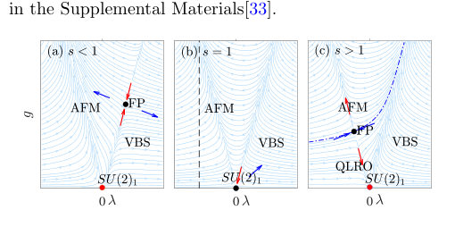
<figcaption class="paper-figure-caption"><b>Fig 1.</b> FIG. 1. (a) -(c) The RG flow diagram of beta function for s &lt; 1, s = 1, and s &gt; 1, respectively. The short arrows near the FP are the eigen-directions. The black dashed line indicate the RG starting points of dissipative Heisenberg chain. The blue dot-dashed line indicates the phase boundary of QLRO phase and AFM phase.</figcaption>
</figure>
<figure class="paper-figure-card">
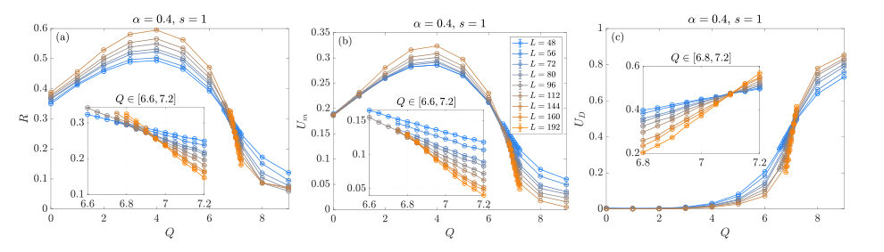
<figcaption class="paper-figure-caption"><b>Fig 2.</b> FIG. 2. (a)R, (b)Um, and (c) UD versus Q for different system sizes at coupling α = 0.4 for the Ohmic dissipation.</figcaption>
</figure>
<figure class="paper-figure-card">
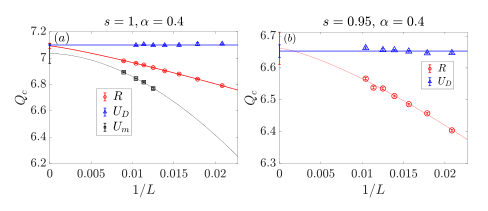
<figcaption class="paper-figure-caption"><b>Fig 3.</b> FIG. 3. Crossing-point analysis for the Ohmic (a) and sub- Ohmic (s = 0.95) (b) cases with α = 0.4. The symbols mark the crossings of the Um, R, and UD curves between L and 2L. For s = 0.95, the crossings of Um are omitted because of poor convergence resulting from strong corrections to scaling. Solid lines are power-law fits to crossings of Um and R, and cubic polynomial fit to crossings of UD. The extrapolated Qc are indicated at 1/L = 0.</figcaption>
</figure>
<figure class="paper-figure-card">
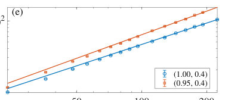
<figcaption class="paper-figure-caption"><b>Fig 4.</b> FIG. 4. Log-Log plots of C(L/2) (a), m2 s(L)(b), D2(L)(c), CD(L/2)(d), and ξτ (e) at the AFM-VBS critical points for different (s, α). Solid lines are fits.</figcaption>
</figure>
</div>

<p><strong>Summary.</strong> The paper investigates the nature of quantum phase transitions in a dissipative spin-1/2 chain by competing AFM and VBS orders. Using advanced RG theory and QMC simulations, it maps out the phase diagram across different dissipation strengths. The key finding is the existence of continuous critical points, notably an O(4) symmetric DQCP when Ohmic dissipation is present.</p>
<p><strong>Why it may be interesting.</strong> This work bridges concepts from quantum criticality (DQCP), open quantum systems (dissipation/bath coupling), and strongly correlated magnetism, providing a detailed theoretical roadmap for understanding how environmental coupling can stabilize or modify exotic quantum phases.</p>
<details>
<summary>Detailed structure</summary>
<p><strong>Main problem.</strong> The study investigates realizing a Deconfined Quantum Critical Point (DQCP) in an open quantum spin system by analyzing the competition between Antiferromagnetic (AFM) order and Valence-Bond Solid (VBS) states under environmental dissipation.</p>
<p><strong>Main result.</strong> Continuous AFM-VBS transitions are found at finite dissipation, with the Ohmic case ($s=1$) exhibiting a DQCP characterized by emergent O(4) symmetry. Strong dissipation generally stabilizes an AFM phase across various bath regimes.</p>
<p><strong>Method.</strong> The research employs non-Abelian bosonization and Renormalization Group (RG) analysis, supplemented by large-scale Quantum Monte Carlo (QMC) simulations using wormhole algorithms for retarded interactions.</p>
<p><strong>Model / system.</strong> The model is a spin-1/2 J-Q3 chain where each spin component interacts with an independent bosonic bath, introducing dissipation characterized by the spectral density exponent $s$ (sub-, Ohmic, or super-Ohmic).</p>
<p><strong>Key observables.</strong> Binder cumulants ($U_m, U_D$) for AFM and VBS order, correlation ratio ($R$), spin correlation functions ($\langle \Phi(r)\Phi(0) 
angle$), and the imaginary-time correlation length $\xi_	au$.</p>
<p><strong>Important parameters / regimes.</strong> Dissipation exponent $s$ (sub-Ohmic $s<1$, Ohmic $s=1$, super-Ohmic $s>1$), multi-spin interaction strength ($Q$), and coupling constants ($\lambda, g$).</p>
<p><strong>Assumptions / limitations.</strong> The analysis relies on perturbative RG techniques and assumes the validity of bosonization methods for describing the critical behavior in dissipative systems.</p>
<p><strong>Figures summary.</strong> Figures illustrate RG flow diagrams showing fixed points and phase boundaries across different dissipation regimes; other figures show size-dependent scaling plots (e.g., $R$ vs $L$) used to pinpoint critical coupling strengths ($Q_c$).</p>
<p><strong>Paper structure.</strong> The paper progresses by first establishing the theoretical framework using bosonization and RG, then applying QMC simulations across different dissipation regimes ($s$), determining phase boundaries, and finally extracting critical exponents and symmetries at specific points like the Ohmic DQCP.</p>
</details>
<details>
<summary>Abstract</summary>
<p>Open quantum spin systems offer a previously unexplored route to realizing deconfined quantum criticality. We consider a spin-1/2 $J$-$Q_3$ chain, consisting of an antiferromagnetic (AFM) Heisenberg exchange and a competing multi-spin interaction favoring a valence-bond solid (VBS) state, with each spin component coupled to a bosonic bath. Using non-Abelian bosonization and renormalization-group (RG) analysis, combined with large-scale quantum Monte Carlo (QMC) simulations, we determine the phase diagram and the associated phase transitions of the model. We show that strong dissipation stabilizes an AFM phase for sub-Ohmic, Ohmic, and super-Ohmic baths. Continuous AFM-VBS transitions at finite dissipation are found upon increasing the multi-spin interaction in both the sub-Ohmic and Ohmic regimes. Critical properties are obtained through perturbative RG analysis and QMC simulations. In the Ohmic case, the critical point features spinon deconfinement and emergent O(4) symmetry. In the sub-Ohmic regime, the transition may also involve spinon deconfinement, provided that spinons remain deconfined in the dissipative VBS phase. In addition, in the super-Ohmic regime, we propose a transition from AFM phase to a quasi-long-range ordered phase.</p>
</details>
<p><sub><a href="#top">↑ back to top</a></sub></p>

<p><a id="paper-2607.15343"></a></p>
<h3 id="non-hermitian-quantum-adiabatic-algorithm"><a href="http://arxiv.org/abs/2607.15343v1">Non-Hermitian Quantum Adiabatic Algorithm</a></h3>
<p><strong>Authors:</strong> Zi-Bo Jin, Yi Zhang<br>
<strong>Type:</strong> theory · <strong>Category:</strong> quantum information and computing · <strong>PDF:</strong> <a href="https://arxiv.org/pdf/2607.15343v1">https://arxiv.org/pdf/2607.15343v1</a><br>
<strong>Analysis basis:</strong> full PDF text, analyzed in chunks
<strong>Topic relevance:</strong> 🔥 <code>analog quantum simulation</code> <strong>4/5</strong> · <code>correlated / nonlocal dissipation</code> <strong>3/5</strong> · <code>driven-dissipative phase transition</code> <strong>3/5</strong> · <code>methods for driven-dissipative</code> <strong>3/5</strong> · <code>Kondo &amp; dissipative impurity</code> <strong>2/5</strong> · <code>Rydberg arrays</code> <strong>2/5</strong> · <code>non-equilibrium dynamics</code> <strong>2/5</strong> · <code>Keldysh / 2PI / non-Gaussian methods</code> <strong>1/5</strong> · <code>entanglement &amp; information structure</code> <strong>1/5</strong> · <code>non-equilibrium universality</code> <strong>1/5</strong></p>
<div class="figure-strip-hint">↔ Scroll figures horizontally</div>
<div class="paper-figures-scroll">
<figure class="paper-figure-card">
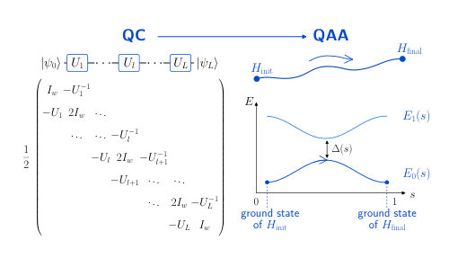
<figcaption class="paper-figure-caption"><b>Fig 1.</b> FIG. 1. A schematic illustration of the mapping from QC to QAA, where the gate sequence of the QC (top left) is con- verted to a continuous Hamiltonian path H(s) (right) from Hinit to Hfinal (lower left). The spectrum remains gapped ∆(s) = E1(s) −E0(s), thereby protecting the adiabatic evo- lution of the ground state, which, upon reaching Hfinal, yields the target solution.</figcaption>
</figure>
<figure class="paper-figure-card">
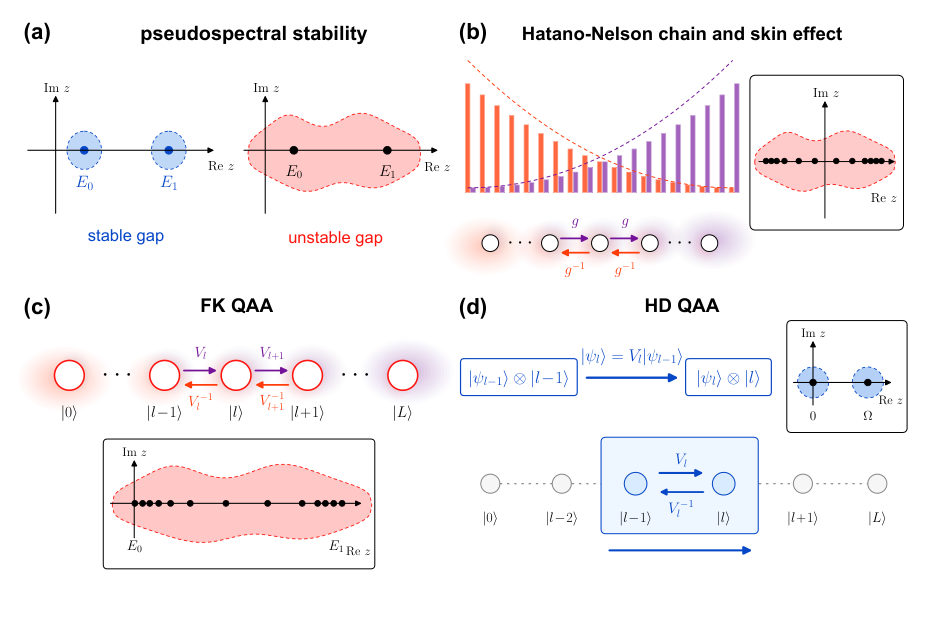
<figcaption class="paper-figure-caption"><b>Fig 2.</b> FIG. 2. (a) A gap with an isolated (merged) pseudospectrum is stable (unstable) under perturbations. (b) The non-Hermitian Hatano-Nelson model exhibits a highly unstable pseudospectrum, thus the non-Hermitian skin effect and sensitivity to pertur- bations such as boundary conditions. (c) The FK QAA’s effective model resembles a non-reciprocal Hatano-Nelson chain, in which the non-normality of the similarity transformation accumulates, leading to an unstable pseudospectrum. (d) In com- parison, the HD QAA converts non-unitary gates Vl and V −1 l and establishes non-reciprocal coupling locally, thereby ensuring overall pseudospectral stability and, thus, adiabaticity under perturbations.</figcaption>
</figure>
<figure class="paper-figure-card">
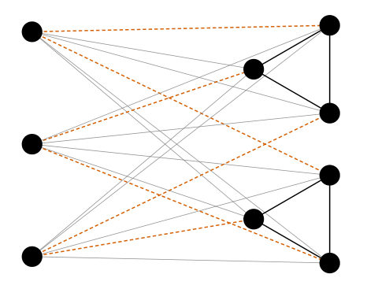
<figcaption class="paper-figure-caption"><b>Fig 3.</b> FIG. 3. A schematic illustration of the CK graph (Gm, m = 3) and its modifications (G′ m, m = 3) of the MIS problem. Solid black circles represent vertices, and lines represent edges. In the CK graph G3, the left (isolated dots) and right (triangles) sections are fully connected (both solid and dashed lines). Its MIS consists of the three vertices on the left, while the trian- gles on the right generate competing local minima. A CK-like graph G′ 3 is obtained by randomly removing connections (or- ange dashed lines) between the G3’s two sides.</figcaption>
</figure>
<figure class="paper-figure-card">
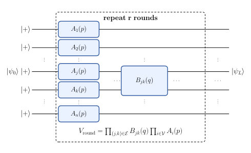
<figcaption class="paper-figure-caption"><b>Fig 4.</b> FIG. 4. A schematic illustration of the non-unitary QC for solving the MIS problem: given an initial state |ψ0⟩with equal-weight superposition |+⟩⊗n, the output is obtained af- ter repeated r rounds of operations. Within each round (dashed box), vertex-amplification gates Ai(p) and two-qubit edge-constraint gates Bjk(q) are applied according to the ver- tices and edges of the MIS graph.</figcaption>
</figure>
<figure class="paper-figure-card">
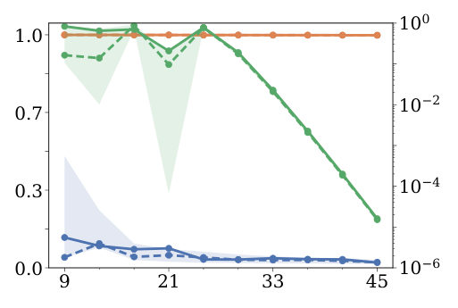
<figcaption class="paper-figure-caption"><b>Fig 5.</b> FIG. 5. The success probability P (0) MIS of the three QAAs exhibits qualitatively different scalings versus the problem size n. The HM QAA (green, right log axis) suffers an exponential decrease, whereas the non-Hermitian QAAs’ P (0) MIS (left linear axis) decrease much more slowly. Note the difference in the vertical axis. Still, the HD QAA (orange) leads with a success probability P (0) MIS ∼1 versus the polynomial scaling of the FK QAA (blue). Here, the solid lines indicate results on the CK graphs Gm, while the dashed lines and shaded regions denote the medians and the ranges across 200 CK-like graphs G′ m.</figcaption>
</figure>
</div>

<p><strong>Summary.</strong> This paper introduces a novel, stable framework for Non-Hermitian Quantum Adiabatic Algorithms. By proposing a history-decoupled mapping, it overcomes critical spectral instabilities found in previous non-Hermitian approaches. This work establishes pseudospectral stability as a key requirement, offering a practical route for quantum computation suitable for current noisy hardware.</p>
<p><strong>Why it may be interesting.</strong> This is highly relevant as it provides a concrete, theoretically sound pathway to implementing quantum algorithms on hardware that naturally supports dissipation (like Rydberg arrays), bypassing the exponential overheads associated with purely unitary models.</p>
<details>
<summary>Detailed structure</summary>
<p><strong>Main problem.</strong> Developing a robust non-Hermitian Quantum Adiabatic Algorithm (QAA) that overcomes spectral instabilities inherent in standard adiabatic quantum computation methods.</p>
<p><strong>Main result.</strong> The authors propose a history-decoupled construction (HD QAA) which successfully maintains both pseudospectral stability and a real, gapped spectrum for non-Hermitian evolution.</p>
<p><strong>Method.</strong> They map non-unitary quantum circuits to local Hamiltonian paths using a novel 'history-decoupled' mapping, avoiding the severe instabilities of direct extensions like the Feynman-Kitaev construction.</p>
<p><strong>Model / system.</strong> The work focuses on abstract non-Hermitian Hamiltonians governing adiabatic evolution for optimization problems, benchmarked against Maximum Independent Set (MIS) problems. The underlying physics involves open quantum systems with gain/loss mechanisms.</p>
<p><strong>Key observables.</strong> Real and gapped spectrum ($\Delta(s)$), stable pseudospectrum ($\Lambda_\epsilon(H)$), and polynomial evolution time.</p>
<p><strong>Important parameters / regimes.</strong> The degree of spectral instability quantified by the condition number $\kappa(S)$, and the circuit depth $L$ (which dictates complexity).</p>
<p><strong>Assumptions / limitations.</strong> A real, gapped spectrum alone is insufficient; pseudospectral stability is a necessary key principle for practical non-Hermitian QAA.</p>
<p><strong>Figures summary.</strong> Figure 1 schematically illustrates mapping QC gates to continuous Hamiltonian paths. Table I compares three constructions (HM QAA, FK QAA, HD QAA) based on adiabatic time and pseudospectrum stability.</p>
<p><strong>Paper structure.</strong> The paper establishes the theoretical necessity of pseudospectral stability for non-Hermitian QAA, contrasts it with unstable methods like FK construction, proposes the stable HD mapping, and validates its polynomial scaling using MIS benchmarks.</p>
</details>
<details>
<summary>Abstract</summary>
<p>Non-Hermitian systems offer new opportunities for quantum optimization and computation. Here, we show that non-Hermitian quantum adiabatic algorithms require not only a real, gapped spectrum, but also a stable pseudospectrum. We propose a novel framework by mapping non-unitary quantum circuits to local Hamiltonian paths, thereby preserving their optimization advantages and shallow depth. While a direct non-Hermitian extension of the Feynman-Kitaev construction suffers severe pseudospectral instability, our history-decoupled construction yields both a controlled pseudospectrum and a real, gapped spectrum. Using the CK benchmark family of maximum independent set problems, we demonstrate polynomial-evolution-time non-Hermitian adiabatic computation that remains robust against perturbations. We further discuss a feasible optical implementation using coupled waveguides with an auxiliary lossy channel. Our work establishes pseudospectral stability, alongside real, gapped spectra, as key principles and a practical route for non-Hermitian quantum adiabatic computation.</p>
</details>
<p><sub><a href="#top">↑ back to top</a></sub></p>

<p><a id="paper-2607.15353"></a></p>
<h3 id="dynamical-polarization-from-hidden-spin-and-orbital-textures-in-p-wave-magnets"><a href="http://arxiv.org/abs/2607.15353v1">Dynamical Polarization from Hidden Spin and Orbital Textures in p-Wave Magnets</a></h3>
<p><strong>Authors:</strong> Yantao Li, Jacob Linder, Pavlo Sukhachov<br>
<strong>Type:</strong> theory · <strong>Category:</strong> strongly correlated electrons · <strong>PDF:</strong> <a href="https://arxiv.org/pdf/2607.15353v1">https://arxiv.org/pdf/2607.15353v1</a><br>
<strong>Analysis basis:</strong> full PDF text, analyzed in chunks
<strong>Topic relevance:</strong> 🔥 <code>non-equilibrium dynamics</code> <strong>4/5</strong> · <code>Keldysh / 2PI / non-Gaussian methods</code> <strong>3/5</strong> · <code>methods for driven-dissipative</code> <strong>3/5</strong> · <code>spintronics-quantum-optics interface</code> <strong>3/5</strong> · <code>driven-dissipative phase transition</code> <strong>2/5</strong> · <code>non-equilibrium universality</code> <strong>2/5</strong> · <code>Kondo &amp; dissipative impurity</code> <strong>1/5</strong> · <code>analog quantum simulation</code> <strong>1/5</strong> · <code>exotic spin models in light-matter</code> <strong>1/5</strong></p>
<div class="figure-strip-hint">↔ Scroll figures horizontally</div>
<div class="paper-figures-scroll">
<figure class="paper-figure-card">
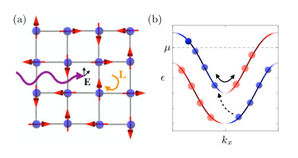
<figcaption class="paper-figure-caption"><b>Fig 1.</b> FIG. 1. Panel (a) shows the schematics of a light-driven p- wave magnet. Light, via an electric field E, induces oscillat- ing spin polarization and rectified orbital angular momentum L. Panel (b) illustrates the SEE, where the electric field re- distributes carriers within the spin-polarized bands (solid ar- rows), while the dashed arrow denotes an interband transition responsible for the resonant response near the minimum di- rect gap. Red and blue indicate opposite spin polarizations.</figcaption>
</figure>
<figure class="paper-figure-card">
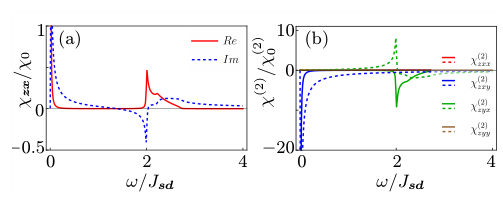
<figcaption class="paper-figure-caption"><b>Fig 2.</b> FIG. 3. Panels (a) and (b) show the spin Edelstein response coefficient χzx and the orbital angular momentum response coefficient χ(2) ijl , respectively, as functions of the driving fre- quency ω. We used the Kubo formulae (9) and (10) in panel (a) and density matrix approach in panel (b). Solid and dashed lines correspond to real and imaginary parts, respec- tively. In all panels, we fix α = 0.5 k⋆with k⋆= √2mJsd, µ = 2 Jsd, and τ = 100 J−1 sd . The normalization coeficients are χ0 = e p</figcaption>
</figure>
</div>

<p><strong>Summary.</strong> This paper theoretically investigates dynamical spin and orbital polarizations in p-wave magnets under periodic driving. It shows that the time-averaged picture fails to capture key physics, demonstrating that driving converts hidden momentum-odd textures into measurable ac spin and static dc orbital responses. The methodology combines Floquet theory with Kubo response calculations.</p>
<p><strong>Why it may be interesting.</strong> This work provides a concrete theoretical framework for understanding how non-equilibrium driving can unlock novel, measurable quantum responses in magnetic materials, which is crucial for designing advanced spintronic devices.</p>
<details>
<summary>Detailed structure</summary>
<p><strong>Main problem.</strong> The study addresses how periodic driving can reveal essential dynamical polarization effects (spin and orbital) in p-wave magnets that are entirely missed by standard period-averaged descriptions.</p>
<p><strong>Main result.</strong> Periodic driving generates a measurable, static, momentum-even orbital polarization and an oscillating ac spin polarization, both of which originate from hidden, momentum-odd textures invisible to time-averaging.</p>
<p><strong>Method.</strong> The analysis employs Floquet theory combined with the Kubo linear response formalism to calculate time-dependent expectation values for spin and orbital angular momenta.</p>
<p><strong>Model / system.</strong> The system is a p-wave magnet described by an effective Hamiltonian, analyzed using continuum models incorporating exchange coupling ($J_{sd}$) and subjected to periodic driving fields (e.g., electric field $E(t)$).</p>
<p><strong>Key observables.</strong> Spin polarization ($\langle\langle \hat{S} 
angle
angle$), Orbital Angular Momentum ($\langle\langle \hat{L} 
angle
angle$), Dynamical Spin Edelstein Response ($\chi^{(S)}$), and Rectified Orbital Polarization ($\chi^{(L),(2)}$).</p>
<p><strong>Important parameters / regimes.</strong> The resonant enhancement occurs near the interband gap set by nonrelativistic exchange splitting, and the analysis depends on the drive frequency $\omega$.</p>
<p><strong>Assumptions / limitations.</strong> Key approximations include using the Floquet formalism for time evolution and employing the relaxation time approximation in the density matrix equations.</p>
<p><strong>Figures summary.</strong> Figures illustrate schematics of light-induced oscillating spin polarization and rectified orbital angular momentum, comparing period-averaged versus instantaneous texture components for both spin and orbital moments.</p>
<p><strong>Paper structure.</strong> The paper builds from defining the Floquet formalism to calculating time-dependent expectation values. It then applies Kubo linear response theory to derive the dynamical spin Edelstein effect (linear response) and subsequently calculates second-order terms to find the rectified, static orbital polarization.</p>
</details>
<details>
<summary>Abstract</summary>
<p>Period-averaged descriptions often miss essential features of driven quantum matter. We show that the micromotion of an optically driven $p$-wave magnet unveils a hidden net spin polarization, absent from both the equilibrium and period-averaged spin textures, which remain odd in momentum. This spin polarization oscillates at the drive frequency and is resonantly enhanced at the interband gap set by nonrelativistic exchange splitting. The drive further activates an orbital angular momentum governed by interband quantum geometry. While its linear response remains momentum-odd, nonlinear rectification yields a static, momentum-even orbital polarization for suitably oriented driving fields. These results establish $p$-wave magnets as a source of resonant ac spin and rectified dc orbital polarization: effects invisible to any period-averaged treatment.</p>
</details>
<p><sub><a href="#top">↑ back to top</a></sub></p>

<p><a id="paper-2607.15798"></a></p>
<h3 id="quantum-and-classical-entropic-complexity-of-the-thermal-state-coherence-decoherence-and-the-ergodic-to-localized-crossover-in-random-matrix-and-many-body-models"><a href="http://arxiv.org/abs/2607.15798v1">Quantum and classical entropic complexity of the thermal state: coherence, decoherence, and the ergodic-to-localized crossover in random-matrix and many-body models</a></h3>
<p><strong>Authors:</strong> Imre Varga, Onur Aktan<br>
<strong>Type:</strong> theory · <strong>Category:</strong> disordered systems and neural networks · <strong>PDF:</strong> <a href="https://arxiv.org/pdf/2607.15798v1">https://arxiv.org/pdf/2607.15798v1</a><br>
<strong>Analysis basis:</strong> full PDF text, analyzed in chunks
<strong>Topic relevance:</strong> 🔥 <code>entanglement &amp; information structure</code> <strong>4/5</strong> · <code>methods for driven-dissipative</code> <strong>3/5</strong> · <code>non-equilibrium dynamics</code> <strong>3/5</strong> · <code>analog quantum simulation</code> <strong>2/5</strong> · <code>correlated / nonlocal dissipation</code> <strong>2/5</strong> · <code>driven-dissipative phase transition</code> <strong>2/5</strong> · <code>scars &amp; prethermalization</code> <strong>2/5</strong> · <code>Keldysh / 2PI / non-Gaussian methods</code> <strong>1/5</strong> · <code>non-equilibrium universality</code> <strong>1/5</strong></p>
<div class="figure-strip-hint">↔ Scroll figures horizontally</div>
<div class="paper-figures-scroll">
<figure class="paper-figure-card">
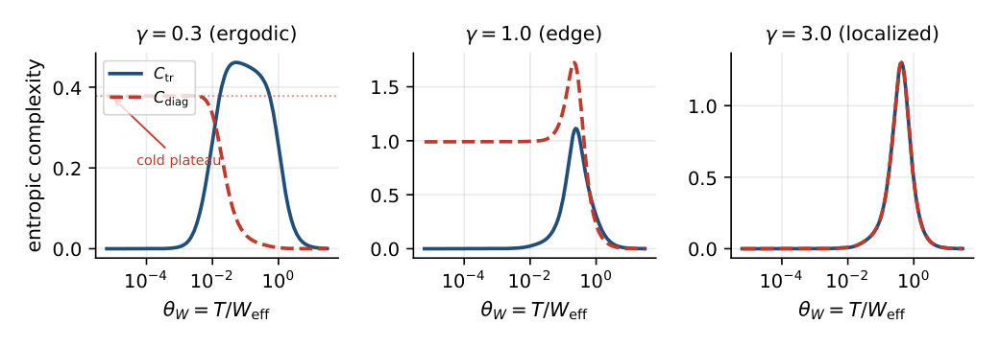
<figcaption class="paper-figure-caption"><b>Fig 1.</b> FIG. 1. Temperature dependence of the trace (Ctr, solid) and diagonal (Cdiag, dashed) complexities, illustrated for the RP model (N = 1600) at three values of γ. At γ = 3 (localized) both curves are single, coincident, broadened peaks. At γ = 1 (edge) Cdiag develops a peak above a residual low-T shoulder. At γ = 0.3 (ergodic) Cdiag has no interior maximum: it rises to a cold plateau as T →0 (the ground-state site complexity) while Ctr remains a clean interior peak. Temperature is in bandwidth units θW = T/Weff.</figcaption>
</figure>
<figure class="paper-figure-card">
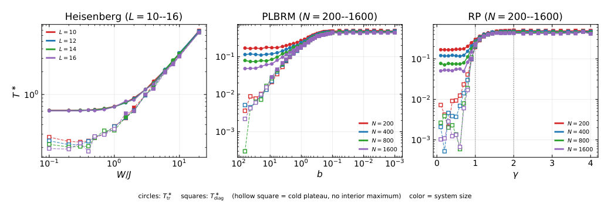
<figcaption class="paper-figure-caption"><b>Fig 2.</b> FIG. 2. Trace versus diagonal characteristic temperatures across the three models and their full range of system sizes: Heisenberg (L = 10–16) vs disorder W, PLBRM (N = 200–1600) vs bandwidth b, and RP (N = 200–1600) vs γ, with color marking size (red, blue, green, violet for the smallest to largest size in each model, as in Figs. 4 and 5) and marker shape marking the two temperatures (T ∗ tr: circles, T ∗ diag: squares). The b axis in the center panel is reversed (increasing rightward, toward the PLBRM localized limit) so that all three panels share the same left-to-right ergodic-to-localized direction. In each case T ∗ tr and T ∗ diag coincide on the localized side (Heisenberg large W,...</figcaption>
</figure>
<figure class="paper-figure-card">
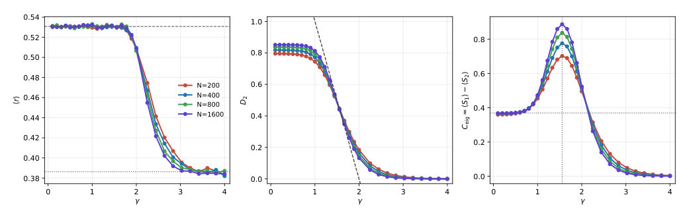
<figcaption class="paper-figure-caption"><b>Fig 3.</b> FIG. 3. Rosenzweig–Porter model, N = 200–1600. Left: mean gap ratio ⟨r⟩(γ), pinned to the GOE value (dashed) throughout the ergodic and fractal phases and falling toward Poisson (dotted) only past γ = 2. Center: fractal dimension D2(γ), tracking 2 −γ (dashed) with finite-size rounding at the boundaries. Right: eigenstate entropic complexity Ceig(γ), peaking at γ∗≈1.5– 1.6 (vertical dotted line at γ∗≈1.56); the horizontal dotted line marks the analytic GOE plateau CGOE = ln 3</figcaption>
</figure>
<figure class="paper-figure-card">
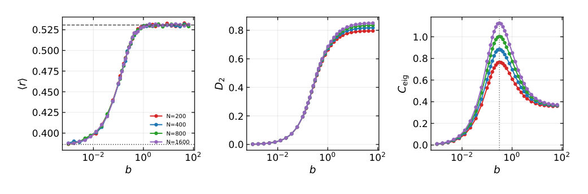
<figcaption class="paper-figure-caption"><b>Fig 4.</b> FIG. 4. Power-law banded random matrix model, Eq. (8), µ = 1, N = 200–1600. Left: mean gap ratio ⟨r⟩(b), interpolating continuously between Poisson (dotted) and GOE (dashed) values – unlike RP, spectral statistics are not pinned to GOE through the crossover. Center: fractal dimension D2(b), smooth and featureless. Right: eigenstate entropic complexity Ceig(b), peaking at b∗= 0.31 ± 0.01 (dotted line), essentially independent of N, with peak height growing systematically with N.</figcaption>
</figure>
<figure class="paper-figure-card">
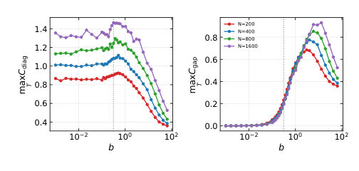
<figcaption class="paper-figure-caption"><b>Fig 5.</b> FIG. 5. PLBRM thermal analysis, N = 200–1600, high- statistics scan (vertical dotted line marks b∗≈0.31). Left: maxT Cdiag(b); on top of an otherwise broad plateau, a weak (≈10–13%) but reproducible bump is resolved at b∗itself for every size studied. Right: the temperature-maximized coher- ence gap maxT Cgap(b), a smooth unimodal function peaking at b∗ edge ≫b∗; b∗ edge recedes sub-linearly with N (approxi- mately b∗ edge ∝N 0.6) even though b∗itself does not.</figcaption>
</figure>
</div>

<p><strong>Summary.</strong> The paper uses entropic complexity to probe how quantum information encoded in individual energy eigenstates survives thermal averaging across disorder-induced phase transitions. It finds that while thermal mixing strongly suppresses eigenstate signatures, it also reveals a distinct 'edge' feature unique to the mixed Gibbs state, thereby cleanly separating eigenstate physics from thermal dynamics.</p>
<p><strong>Why it may be interesting.</strong> This work provides quantitative tools (entropic complexity) to distinguish between intrinsic quantum state properties (eigenstates) and the effects of thermalization/decoherence, which is crucial for understanding open quantum systems dynamics.</p>
<details>
<summary>Detailed structure</summary>
<p><strong>Main problem.</strong> The study investigates whether thermal averaging processes preserve intrinsic signatures of eigenstate complexity as a quantum system undergoes an ergodic-to-localized crossover.</p>
<p><strong>Main result.</strong> Thermal averaging strongly suppresses the characteristic mid-phase peaks found in individual eigenstates, suggesting that the two types of complexity features (eigenstate vs. thermal) are governed by distinct physical mechanisms.</p>
<p><strong>Method.</strong> The authors employ entropic complexity measures ($C = S_1 - S_2$) applied to both pure energy eigenstates and the full thermal (Gibbs) state ($
ho_T$).</p>
<p><strong>Model / system.</strong> Three disordered models are analyzed: the Rosenzweig–Porter (RP) ensemble, the Power-law banded random matrix (PLBRM), and the Random-field Heisenberg chain. These systems model transitions between ergodic and localized quantum regimes.</p>
<p><strong>Key observables.</strong> Entropic complexity ($C$), Eigenstate Complexity ($ ext{Ceig}$), Trace complexity ($C_{  ext{tr}}$), Diagonal complexity ($C_{   ext{diag}}$), and the Coherence Gap ($C_{ ext{gap}}$).</p>
<p><strong>Important parameters / regimes.</strong> Disorder strength ($\gamma$ in RP model), Temperature ($T$), and system size ($N$). The crossover is studied across ergodic, intermediate (multifractal), and localized regimes.</p>
<p><strong>Assumptions / limitations.</strong> The analysis relies on comparing wavefunction-level quantities to thermal observables; specific approximations are used for calculating complexity in the microcanonical limit.</p>
<p><strong>Figures summary.</strong> Figures illustrate temperature dependence of $C_{	ext{tr}}$ and $C_{	ext{diag}}$ (e.g., RP model), showing distinct features like a 'cold plateau' versus an interior peak, and show how PLBRM washout scales differently than predicted by independent assumptions.</p>
<p><strong>Paper structure.</strong> The paper systematically compares complexity measures across three models, identifying two key phenomena: a mid-phase eigenstate feature (seen in RP/PLBRM) and a distinct edge-of-ergodicity feature (visible only in thermal observables). It uses scaling indicators to separate these physical origins.</p>
</details>
<details>
<summary>Abstract</summary>
<p>Does thermal averaging preserve signatures of eigenstate complexity? We study the entropic complexity C = S_1 - S_2 (Shannon minus second-order Renyi entropy) across the ergodic-to-localized crossover of three disordered models: the Rosenzweig-Porter (RP) ensemble, the power-law banded random matrix (PLBRM) ensemble, and the random-field Heisenberg chain. We compare a wavefunction-level quantity C_eig to the complexity of the thermal (Gibbs) state before and after pointer-basis dephasing, via the trace (C_tr) and diagonal (C_diag) complexities. The answer is mostly no: thermal averaging strongly suppresses, but does not eliminate, eigenstate-complexity signatures. C_eig develops a pronounced mid-phase maximum in RP and, at matching fractal dimension, in the structurally independent PLBRM model; a high-statistics scan resolves a weak (about 10%) but reproducible thermal shadow of this peak in the thermal diagonal complexity. This feature is confined to the two random-matrix models; in the Heisenberg chain the eigenstate complexity instead peaks at the many-body localization transition. A second, genuinely thermal feature, an edge just inside the ergodic phase, has no eigenstate counterpart and, in PLBRM, recedes with system size. Both features are tracked by scale-invariant crossover indicators: the log-ratio of the trace and diagonal crossover temperatures, which vanishes upon localization, and the relative entropy of coherence. Entropic complexity thus cleanly separates thermal-state and eigenstate physics: a sharp wavefunction-level feature, reproducible across unrelated random-matrix constructions, leaves only a faint, structurally distinct imprint on thermal observables.</p>
</details>
<p><sub><a href="#top">↑ back to top</a></sub></p>

<p><a id="paper-2607.15493"></a></p>
<h3 id="the-complexity-of-dynamical-correlators-operator-shadows-and-exponential-learning-separations"><a href="http://arxiv.org/abs/2607.15493v1">The Complexity of Dynamical Correlators: Operator Shadows and Exponential Learning Separations</a></h3>
<p><strong>Authors:</strong> Shao-Hen Chiew, Armando Angrisani, Zoe Holmes<br>
<strong>Type:</strong> theory · <strong>Category:</strong> quantum information and computing · <strong>PDF:</strong> <a href="https://arxiv.org/pdf/2607.15493v1">https://arxiv.org/pdf/2607.15493v1</a><br>
<strong>Analysis basis:</strong> full PDF text, analyzed in chunks
<strong>Topic relevance:</strong> 🔥 <code>entanglement &amp; information structure</code> <strong>4/5</strong> · 🔥 <code>quantum measurements</code> <strong>4/5</strong> · <code>measurement-induced transitions</code> <strong>3/5</strong> · <code>methods for driven-dissipative</code> <strong>3/5</strong> · <code>non-equilibrium dynamics</code> <strong>2/5</strong> · <code>Keldysh / 2PI / non-Gaussian methods</code> <strong>1/5</strong> · <code>analog quantum simulation</code> <strong>1/5</strong> · <code>driven-dissipative phase transition</code> <strong>1/5</strong> · <code>non-equilibrium universality</code> <strong>1/5</strong></p>
<div class="figure-strip-hint">↔ Scroll figures horizontally</div>
<div class="paper-figures-scroll">
<figure class="paper-figure-card">
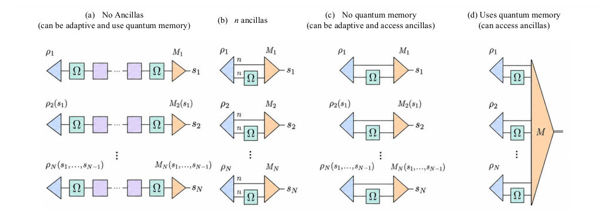
<figcaption class="paper-figure-caption"><b>Fig 1.</b> Figure 1. Classes of protocols for learning OTOCs considered in our work, which also captures the majority of existing protocols. For compactness we here write Ω= OE,O to denote the generalized Loschmidt echo channel.</figcaption>
</figure>
<figure class="paper-figure-card">
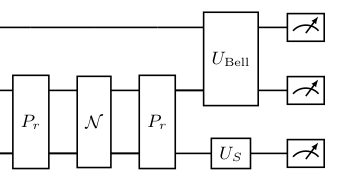
<figcaption class="paper-figure-caption"><b>Fig 2.</b> Figure 2. Circuit for computing the diagonal PTM elements of N using n + nanc qubits. An instance of the (n + nanc)-qubit circuit to be run, for a specific choice of S ∈O and Pr ∈Pn. All qubits are measured in the computational basis in the end. UBell is the Bell basis transformation, while US transforms to the basis { ϕS e }e∈Z2nanc 2 /S.</figcaption>
</figure>
</div>

<p><strong>Summary.</strong> The paper develops advanced measurement techniques using 'operator shadows' to efficiently estimate dynamical quantum correlators like OTOCs and two-point functions. By establishing both algorithmic upper bounds and rigorous information-theoretic lower bounds, the authors precisely characterize the minimum resources needed for these measurements. This advances our ability to diagnose complex many-body dynamics from limited experimental data.</p>
<p><strong>Why it may be interesting.</strong> This work provides a powerful theoretical toolkit for quantum characterization, directly addressing how to extract complex dynamic information from limited experimental measurements—a critical bottleneck in simulating real physical systems like quantum processors or condensed matter models.</p>
<details>
<summary>Detailed structure</summary>
<p><strong>Main problem.</strong> The core problem is developing scalable measurement protocols to estimate complex dynamical quantum correlators, such as OTOCs and two-point functions, which are intractable via full state readout.</p>
<p><strong>Main result.</strong> The authors introduce the 'operator shadow' technique, achieving efficient estimation of large families of these correlators using Pauli or Clifford shadows. They also establish information-theoretic lower bounds proving the measurement efficiency advantages of their vectorized approach.</p>
<p><strong>Method.</strong> They utilize randomized measurements (shadow techniques) applied to time-evolved operators, recasting Heisenberg dynamics into state preparation tasks in the Schrödinger picture. The analysis involves deriving and matching upper bounds with rigorous information-theoretic lower bounds.</p>
<p><strong>Model / system.</strong> The work applies to general many-body quantum systems whose dynamics are governed by unitaries or quantum channels ($\mathcal{E}$). The focus is on estimating expectation values involving time evolution, such as $  ext{tr}(O(t) P O(t) Q)/2^n$.</p>
<p><strong>Key observables.</strong> Out-of-Time-Ordered Correlators (OTOCs), two-point Pauli correlators ($    ext{tr}(P_k P_l(t))/2^n$), and general Process Tomography Matrix (PTM) elements.</p>
<p><strong>Important parameters / regimes.</strong> The complexity bounds depend on the system size ($n$ qubits), the weight of operators ($w$), the number of observables to estimate ($M$), and the desired precision ($\epsilon$).</p>
<p><strong>Assumptions / limitations.</strong> The analysis assumes the ability to prepare states corresponding to time-evolved operators via unitaries applied to maximally entangled states, and that lower bounds can be derived by distinguishing specific quantum states.</p>
<p><strong>Figures summary.</strong> Figure 1 summarizes various protocols for learning OTOCs based on adaptivity, quantum memory requirements, and ancilla access, comparing different shadow techniques.</p>
<p><strong>Paper structure.</strong> The paper progresses from establishing the need to measure dynamics beyond static snapshots. It introduces the operator shadow framework, details specific algorithms (Pauli/Clifford shadows) for OTOCs and two-point functions, and culminates in deriving rigorous information-theoretic lower bounds that characterize the optimal query complexity.</p>
</details>
<details>
<summary>Abstract</summary>
<p>Quantum platforms can realize many-body dynamics beyond classical simulation yet complete readout remains intractable: the cost of extracting accessible information scales exponentially with system size. Classical shadows and Bell sampling offer scalable, multi-observable estimation from randomized or entanglement-assisted measurements. Here we aim to push these ideas beyond static snapshots to dynamical correlators, including out-of-time-ordered correlators (OTOCs) and two-point functions. In particular, we introduce the notion of the shadow of an operator, defined as the classical shadow of the vectorized time-evolved operator. Pauli operator-shadows enable simultaneous estimation of all local OTOCs, while Clifford operator-shadows enable efficient simultaneous estimation of all two-point correlators. Alternatively, Bell sampling allows one to simultaneously compute all diagonal OTOCs. We also prove information-theoretic lower bounds for learning OTOCs, fully characterizing their query complexities in many cases, and yielding exponential separations that formalize when the vectorized approach provides measurement-efficiency advantages.</p>
</details>
<p><sub><a href="#top">↑ back to top</a></sub></p>

<p><a id="paper-2607.15612"></a></p>
<h3 id="enhanced-rydberg-atom-superheterodyne-detection-of-hidden-photon-dark-matter-on-chips"><a href="http://arxiv.org/abs/2607.15612v1">Enhanced Rydberg-Atom Superheterodyne Detection of Hidden-Photon Dark Matter on Chips</a></h3>
<p><strong>Authors:</strong> Xiaochen Li, Bo Gao, Shigeki Matsumoto, Jie Sheng, Chuan-Yang Xing, Hong Ding<br>
<strong>Type:</strong> experiment · <strong>Category:</strong> other · <strong>PDF:</strong> <a href="https://arxiv.org/pdf/2607.15612v1">https://arxiv.org/pdf/2607.15612v1</a><br>
<strong>Analysis basis:</strong> full PDF text, analyzed in chunks
<strong>Topic relevance:</strong> 🔥 <code>Rydberg arrays</code> <strong>4/5</strong> · <code>correlated cavity matter</code> <strong>3/5</strong> · <code>quantum optics experiment</code> <strong>3/5</strong> · <code>Tavis-Cummings &amp; cavity-many-emitter</code> <strong>2/5</strong> · <code>analog quantum simulation</code> <strong>2/5</strong> · <code>quantum measurements</code> <strong>2/5</strong> · <code>QC/QI experiment</code> <strong>1/5</strong> · <code>driven-dissipative phase transition</code> <strong>1/5</strong> · <code>interference shaping light</code> <strong>1/5</strong></p>
<div class="figure-strip-hint">↔ Scroll figures horizontally</div>
<div class="paper-figures-scroll">
<figure class="paper-figure-card">
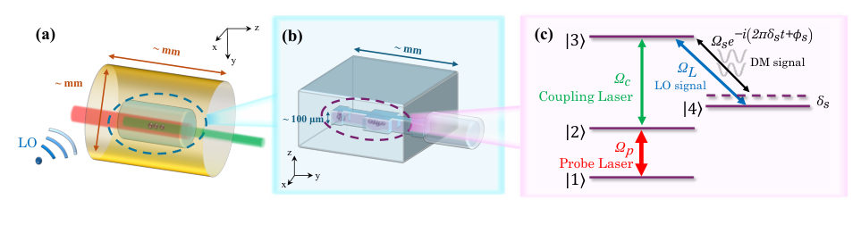
<figcaption class="paper-figure-caption"><b>Fig 1.</b> FIG. 1: Schematic illustration of hidden-photon DM detection using a Rydberg-atom superheterodyne scheme. (a) Proposed experimental setup with an atomic vapor cell placed inside a resonant microwave cavity. (b) Chip-scale Rydberg-atom vapor cell used for optical readout. (c) Response of the superheterodyne detection scheme to the DM-induced electric field.</figcaption>
</figure>
<figure class="paper-figure-card">
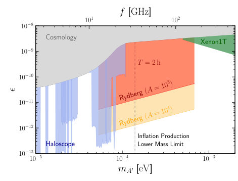
<figcaption class="paper-figure-caption"><b>Fig 2.</b> FIG. 2: Projected reach of the cavity-enhanced Rydberg-atom superheterodyne search. The integration time is 2 hours for each tuning point. The electric-field amplification factor is set to A = 103 (red) and 104 (yellow). Existing bounds from haloscope searches (blue) [69], cosmology (gray) [7], and XENON1T direct absorption (green) [70] are shown for com- parison. The vertical dashed line marks the lower mass limit for inflationary hidden-photon DM production (1).</figcaption>
</figure>
<figure class="paper-figure-card">
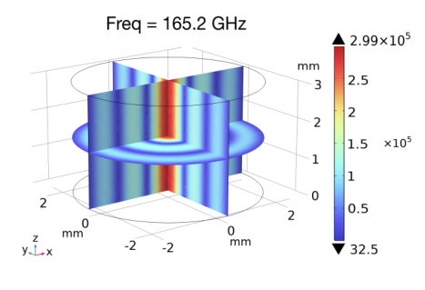
<figcaption class="paper-figure-caption"><b>Fig 3.</b> FIG. 3: Simulation of the electric-field enhancement in a cylindrical cavity with radius 2.5 mm and height 3 mm. The selected cavity mode is TM030, corresponding to a resonant frequency of f = 165.2 GHz. The color scale represents the electric-field amplification factor.</figcaption>
</figure>
</div>

<p><strong>Summary.</strong> The paper proposes an advanced experimental technique to search for hidden-photon dark matter using chip-scale Rydberg atoms. By employing superheterodyne spectroscopy on a resonant cavity platform, the method enhances sensitivity by converting extremely weak, high-frequency signals into measurable low-frequency modulations. This approach promises unprecedented reach in probing specific mass ranges of dark matter candidates.</p>
<p><strong>Why it may be interesting.</strong> This work represents a cutting-edge application of quantum optics—specifically Rydberg atom physics and cavity QED—to fundamental particle astrophysics problems, pushing sensing limits into previously inaccessible regimes.</p>
<details>
<summary>Detailed structure</summary>
<p><strong>Main problem.</strong> The primary goal is the direct detection of hidden-photon dark matter, which induces a weak oscillating electric field in the meV mass range.</p>
<p><strong>Main result.</strong> The proposed method can probe this dark matter signal with sensitivities 3–4 orders of magnitude beyond existing experimental limits by combining resonant enhancement and Rydberg atom spectroscopy.</p>
<p><strong>Method.</strong> A superheterodyne detection scheme is employed, using Electromagnetically Induced Transparency (EIT) to convert the weak high-frequency microwave coupling from the DM field into a measurable low-frequency beat note.</p>
<p><strong>Model / system.</strong> The system utilizes chip-scale Rydberg atoms in a compact cavity setup. The interaction involves probing the EIT resonance, which is modulated by the oscillating electric field induced by kinetic mixing between hidden photons and Standard Model photons.</p>
<p><strong>Key observables.</strong> The key diagnostic parameter is the low-frequency beat note ($\delta s$) derived from the modulation of the transmitted probe power ($\delta P(t)$).</p>
<p><strong>Important parameters / regimes.</strong> Target mass range: $5 	imes 10^{-5}	ext{--}7	imes 10^{-4}\,\mathrm{eV}$. Sensitivity scales depend on integration time ($T$) and coherence time ($ au_c$).</p>
<p><strong>Assumptions / limitations.</strong> The analysis assumes the DM field is non-relativistic, that superheterodyne conversion is necessary due to signal weakness, and uses approximations regarding phase randomization (incoherent vs. coherent detection).</p>
<p><strong>Figures summary.</strong> Figure 2 compares the projected reach of this method against existing bounds from haloscope searches and cosmology.</p>
<p><strong>Paper structure.</strong> The paper develops the theoretical framework for sensing weak fields using Rydberg atoms in an EIT superheterodyne setup, analyzes signal-to-noise scaling laws (both coherent and incoherent), and projects the achievable sensitivity to constrain dark matter parameters.</p>
</details>
<details>
<summary>Abstract</summary>
<p>Although hidden-photon dark matter with masses above $10^{-4}\,\mathrm{eV}$ is well motivated by inflationary production, it remains largely unexplored by terrestrial experiments. Through kinetic mixing, hidden photons induce a weak oscillating electric field above $10\,\mathrm{GHz}$. We propose to amplify this signal using a compact high-frequency distributed cavity and detect it with chip-scale Rydberg-atom superheterodyne spectroscopy. Combining resonant enhancement, large dipole moments of Rydberg atoms, and long-term stable integration, this approach can probe hidden-photon dark matter in the mass range $5 \times 10^{-5}\text{--}7\times 10^{-4}\,\mathrm{eV}$ with sensitivities $3$--$4$ orders of magnitude beyond existing limits.</p>
</details>
<p><sub><a href="#top">↑ back to top</a></sub></p>

<p><a id="paper-2607.15649"></a></p>
<h3 id="fate-of-dynamical-quantum-phase-transitions-from-sudden-quench-to-slow-quench-limit"><a href="http://arxiv.org/abs/2607.15649v1">Fate of dynamical quantum phase transitions from sudden quench to slow quench limit</a></h3>
<p><strong>Authors:</strong> Xiang Zhang, Fuxiang Li<br>
<strong>Type:</strong> theory · <strong>Category:</strong> statistical mechanics · <strong>PDF:</strong> <a href="https://arxiv.org/pdf/2607.15649v1">https://arxiv.org/pdf/2607.15649v1</a><br>
<strong>Analysis basis:</strong> full PDF text, analyzed in chunks
<strong>Topic relevance:</strong> 🔥 <code>non-equilibrium dynamics</code> <strong>4/5</strong> · 🔥 <code>non-equilibrium universality</code> <strong>4/5</strong> · <code>driven-dissipative phase transition</code> <strong>3/5</strong> · <code>methods for driven-dissipative</code> <strong>3/5</strong> · <code>analog quantum simulation</code> <strong>2/5</strong> · <code>Keldysh / 2PI / non-Gaussian methods</code> <strong>1/5</strong> · <code>entanglement &amp; information structure</code> <strong>1/5</strong> · <code>scars &amp; prethermalization</code> <strong>1/5</strong></p>
<div class="figure-strip-hint">↔ Scroll figures horizontally</div>
<div class="paper-figures-scroll">
<figure class="paper-figure-card">
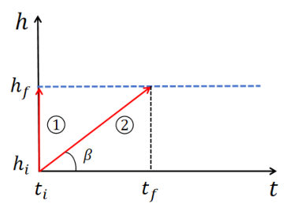
<figcaption class="paper-figure-caption"><b>Fig 1.</b> FIG. 1. Schematic of the quench protocols: Sudden quench protocol 1 ○and slow quench protocol 2 ○. Here, for both quench protocols, the initial hi and final values hf of quench parameter h are fixed. For the slow quench protocol 2 ○, h is changed as a function of time t with quench rate β, i.e., hf = hi + βt.</figcaption>
</figure>
<figure class="paper-figure-card">
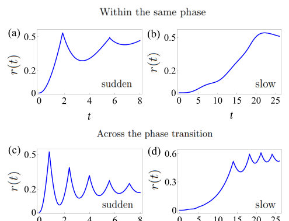
<figcaption class="paper-figure-caption"><b>Fig 2.</b> FIG. 2. DQPTs in the XY chain under sudden and slow quench protocols when the system is quenched within the same ferromagnetic phase and across the phase transition from ferromagnetic phase to paramagnetic phase, respec- tively. (a) and (b) The rate function r(t) of the Loschmidt amplitude under sudden and slow quench protocol within the same phase. (a) Parameter h is suddenly changed from hi = 0 to hf = 0.9 at time t = 0 while γ = 0.3. (b) The quench pa- rameter h is slowly changed as h(t) = hi +βt with the quench rate β = 0.05. (c) and (d) The rate function r(t) of the Loschmidt amplitude under sudden and slow quench proto- col across the equilibrium phase transition. (c) h is suddenly...</figcaption>
</figure>
<figure class="paper-figure-card">
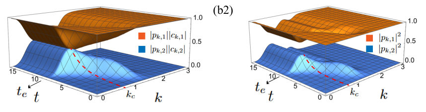
<figcaption class="paper-figure-caption"><b>Fig 3.</b> FIG. 3. The condition (11) for quench rate β = 0.08 (a1) and β = 0.1 (b1) in the XY chain within the same phase. Occupation amplitudes pk,1 and pk,2 for quench rate β = 0.08 (a2) and β = 0.1 (b2). te represents the ending time of slow quench protocols. After te, the subsequent temporal evolution will be governed by the final time-independent Hamiltonian. In (b1) and (b2), the red dotted lines represent the time evolution for critical momentum kc.</figcaption>
</figure>
<figure class="paper-figure-card">
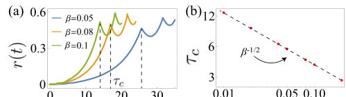
<figcaption class="paper-figure-caption"><b>Fig 4.</b> FIG. 4. The scaling behavior of critical time of DQPT when the system is slowly quenched across the phase transition in the XY chain. (a) Rate function r(t) calculated by the initial state |ψ(ti)⟩with different quench rate. (b) The first critical time τc as a function of the quench rate β.</figcaption>
</figure>
<figure class="paper-figure-card">

<figcaption class="paper-figure-caption"><b>Fig 5.</b> FIG. 5. Loschmidt echo L(t) (blue lines) with sudden ((a) and (c)) and slow quench ((b) and (d)) in the Aubry-Andr´e model. (a) The commensurate potential V is suddenly changed from Vi = 0 to Vf = 1.8 at time t = 0. (b) Slow quench protocol: V (t) = Vi + βt, quench rate β = 0.1. The pre-quench and post-quench Hamtonians are both are in the delocalization phase. (c) and (d) Quench protocol crosses the delocaliza- tion–localization phase boundary (Vi = 0 →Vf = 3). Here, the red dashed lines represent L(t) = 0.</figcaption>
</figure>
</div>

<p><strong>Summary.</strong> This paper explores the fate of Dynamical Quantum Phase Transitions by comparing sudden and slow quenching protocols. It demonstrates that while sudden quenches can show spurious transitions, only slow quenches reveal DQPTs intrinsically linked to true equilibrium quantum phase transitions. This establishes a robust method for using non-equilibrium dynamics as a probe for identifying critical points.</p>
<p><strong>Why it may be interesting.</strong> This work provides a powerful diagnostic tool—the slow quench limit—to rigorously connect non-equilibrium dynamics (DQPTs) directly to static critical points (QPTs), which is highly relevant for understanding quantum criticality in driven systems.</p>
<details>
<summary>Detailed structure</summary>
<p><strong>Main problem.</strong> The study systematically investigates how Dynamical Quantum Phase Transitions (DQPTs) behave when the quench protocol is varied from a sudden switch to a slow, adiabatic-like change.</p>
<p><strong>Main result.</strong> Slow quenches can distinguish intrinsic DQPTs—those linked to equilibrium quantum phase transitions—from 'accidental' ones that occur within a single equilibrium phase.</p>
<p><strong>Method.</strong> The analysis relies on calculating the Loschmidt echo and its associated rate function, comparing results obtained from sudden versus slow quench protocols across various models.</p>
<p><strong>Model / system.</strong> The work applies to general 1D two-band models, specifically analyzing the XY chain, the Aubry-André model, and the trimer Su-Schrieffer-Heeger (SSH3) model. The dynamics are governed by time-dependent Hamiltonians.</p>
<p><strong>Key observables.</strong> Loschmidt echo ($L(t)$), rate function ($r(t)$), and nonanalyticities in $r(t)$ which signal a DQPT.</p>
<p><strong>Important parameters / regimes.</strong> The quench rate ($eta$), the initial and final Hamiltonian parameters ($h_i, h_f$), and the crossing of an equilibrium quantum phase transition are critical parameters.</p>
<p><strong>Assumptions / limitations.</strong> It is assumed that slow quenches reveal the intrinsic connection between DQPTs and underlying equilibrium quantum criticality, provided a bulk gap closure occurs during the process.</p>
<p><strong>Figures summary.</strong> Figures compare rate functions $r(t)$ for sudden versus slow quenches in the SSH3 model, demonstrating how the slow quench filters out spurious transitions and reveals scaling laws related to critical exponents.</p>
<p><strong>Paper structure.</strong> The paper progresses by first establishing the general framework using Loschmidt echoes, then contrasting the results of sudden vs. slow quenches, and finally applying this rigorous test to multiple physical models (XY chain, Aubry-André, SSH3) to confirm the theoretical predictions.</p>
</details>
<details>
<summary>Abstract</summary>
<p>Previous investigations of dynamical quantum phase transition (DQPT) have predominantly focused on sudden quench protocols. In this work, we systematically explore the fate of DQPT from the sudden to the slow quench regime. We establish that DQPT remains robust under slow quenching when the protocol crosses an equilibrium quantum phase transition. Conversely, we show that accidental DQPTs,which occur when the pre and post quench Hamiltonians reside in the same equilibrium phase, can be filtered out in the slow quench limit. This demonstrates that slow quenches can reveal the intrinsic connection between DQPT and equilibrium quantum phase transitions, thereby enabling DQPT to serve as a dynamical probe for identifying equilibrium quantum critical points. We illustrate these findings with examples from the XY chain, the Aubry-André model, and the trimer Su-Schrieffer-Heeger model.</p>
</details>
<p><sub><a href="#top">↑ back to top</a></sub></p>

<p><a id="paper-2607.15976"></a></p>
<h3 id="harnessing-resonant-dipolar-interactions-in-a-hybrid-atom-molecule-quantum-system"><a href="http://arxiv.org/abs/2607.15976v1">Harnessing resonant dipolar interactions in a hybrid atom-molecule quantum system</a></h3>
<p><strong>Authors:</strong> Daniel K. Ruttley, Tom R. Hepworth, Juan M. García-Garrido, Caleb J. H. Rich, Rosario González-Férez, Alexander Guttridge, Simon L. Cornish<br>
<strong>Type:</strong> experiment · <strong>Category:</strong> other · <strong>PDF:</strong> <a href="https://arxiv.org/pdf/2607.15976v1">https://arxiv.org/pdf/2607.15976v1</a><br>
<strong>Analysis basis:</strong> full PDF text, analyzed in chunks
<strong>Topic relevance:</strong> 🔥 <code>QC/QI experiment</code> <strong>4/5</strong> · 🔥 <code>analog quantum simulation</code> <strong>4/5</strong> · <code>Rydberg arrays</code> <strong>3/5</strong> · <code>entanglement &amp; information structure</code> <strong>3/5</strong> · <code>quantum measurements</code> <strong>2/5</strong> · <code>correlated cavity matter</code> <strong>1/5</strong> · <code>non-equilibrium dynamics</code> <strong>1/5</strong> · <code>quantum optics experiment</code> <strong>1/5</strong></p>
<div class="figure-strip-hint">↔ Scroll figures horizontally</div>
<div class="paper-figures-scroll">
<figure class="paper-figure-card">

<figcaption class="paper-figure-caption"><b>Fig 1.</b> FIG. 1. Engineering resonant interactions between a molecule and an atom. a, Schematic of the experiment showing a RbCs molecule and a Rb Rydberg atom which are prepared in species-specific optical tweezers. b, Energies of transitions, ∆EA, between the Rydberg levels of Rb as a function of the initial principal quantum number, n. The height of the lines show the energy range accessible by varying a magnetic field over 100 G. The dashed lines show when the atomic transitions become resonant with molecular transitions labelled as |N⟩→|N ′⟩. The highlighted point shows the transitions that we use in this work. c, Energy levels used in this work, as described in the text. We tune the pair state...</figcaption>
</figure>
<figure class="paper-figure-card">

<figcaption class="paper-figure-caption"><b>Fig 2.</b> FIG. 2. Rydberg blockade caused by resonant atom–molecule interactions. a, Energy levels of the atom–molecule system for the non-resonant (red) and resonant (blue) cases at R ≈1 µm, as described in the text. b, Atomic survival probability as a function of the two-photon detuning of the Rydberg excitation light. Red and blue points show data for molecules prepared in the states |0⟩and |3⟩, respectively, at R = 0.9(1) µm. Grey points show the spectrum measured in the absence of a molecule. When the molecule is prepared in |3⟩, excitation of the atom is strongly suppressed. c, Atomic survival probability as a function of the duration of the Rydberg-excitation pulse. Colours are as in b. d,...</figcaption>
</figure>
<figure class="paper-figure-card">

<figcaption class="paper-figure-caption"><b>Fig 3.</b> FIG. 3. Molecular readout with a Rydberg atom. a, Schematic of the experimental sequence used to map the state of a molecule onto an atom. First, we drive a Rabi oscillation on the molecular transition |0⟩→|1⟩to prepare it in a super- position. Then, we map the population of one of the compo- nent states (here, |1⟩) to the resonant state |3⟩with a series of microwave π pulses. Next, we attempt to resonantly excite the atom to the Rydberg state. This is blockaded state selec- tively and any Rydberg atoms are ejected from the tweezer. Finally, the molecule is returned to its original state and we readout both particles. b, Rabi oscillations on the molecu- lar transition |0⟩→|1⟩. We show the...</figcaption>
</figure>
<figure class="paper-figure-card">

<figcaption class="paper-figure-caption"><b>Fig 4.</b> FIG. 4. Dipolar spin-exchange and entanglement of an atom and molecule. a, Experimental sequence (see text) that we use to observe atom–molecule spin exchange. b, Relative populations of the states |4⟩|83d⟩(purple) and |3⟩|84p⟩(black) with varying spin-exchange duration τ. The different panels show different interparticle separations. We perform a global fit to extract the parameters given in the text. c, Entanglement of the atom and molecule using state-selective dipolar interactions. Upper: experimental sequence, as described in the text. Lower: Entanglement-mediated phase transfer between particles. We prepare the maximally entangled Bell state |Ψ⟩by performing a CNOT gate on the atom...</figcaption>
</figure>
</div>

<p><strong>Summary.</strong> The researchers demonstrated coherent dipole-dipole coupling between Rydberg atoms and polar molecules trapped in optical tweezers. By exploiting resonance, they achieved strong, controlled interactions necessary for quantum information processing tasks. This establishes a scalable hybrid platform capable of mapping molecular quantum information onto atomic states.</p>
<p><strong>Why it may be interesting.</strong> This work represents a significant step toward building hybrid quantum processors by establishing a robust, controllable interface between two distinct quantum matter systems (atoms and molecules) using long-range dipolar interactions.</p>
<details>
<summary>Detailed structure</summary>
<p><strong>Main problem.</strong> The primary goal was to realize controlled, coherent dipolar interactions between an individual Rydberg atom and an individual polar molecule within a scalable optical tweezer platform.</p>
<p><strong>Main result.</strong> The authors successfully demonstrated these coherent dipolar interactions, enabling molecular state readout, observation of spin exchange, and the generation of entanglement via a blockade-based CNOT operation.</p>
<p><strong>Method.</strong> They used species-specific optical tweezers to trap atoms (e.g., Rb) and molecules (e.g., RbCs), tuning atomic and molecular states into resonance to engineer strong dipole-dipole coupling.</p>
<p><strong>Model / system.</strong> The system is a hybrid quantum platform combining neutral Rydberg atoms and polar molecules, governed by an engineered dipole-dipole interaction Hamiltonian ($H_{dd} \propto 1/R^3$). The interactions are controlled by tuning the energy levels into resonance using external fields.</p>
<p><strong>Key observables.</strong> Coherent dipolar coupling strength ($  ext{MHz}$-scale), blockade signatures (suppression of atomic excitation), molecular state readout fidelity, and entanglement fidelity ($F$).</p>
<p><strong>Important parameters / regimes.</strong> Resonance condition achieved by matching transition energies; interaction strengths scale as $1/R^3$ at resonance; measurement fidelities reached $\approx 0.91$.</p>
<p><strong>Assumptions / limitations.</strong> The dipolar description is accurate for separations $R \gtrsim 1 \mu	ext{m}$; the analysis relies on postselection to filter out certain error channels.</p>
<p><strong>Figures summary.</strong> Figures illustrate the schematic setup, energy level diagrams showing resonant pairs, and experimental results demonstrating blockade dependence on distance and molecular state, as well as Rabi oscillations used for readout.</p>
<p><strong>Paper structure.</strong> The work progresses from establishing the feasibility of controlled dipolar interactions in optical tweezers to demonstrating specific quantum operations: first, molecular-state readout via Rydberg blockade; second, observing coherent spin exchange dynamics; and finally, generating entanglement using a CNOT gate.</p>
</details>
<details>
<summary>Abstract</summary>
<p>Hybrid quantum systems offer a route to combining the complementary strengths of distinct quantum platforms while mitigating their limitations. A particularly promising architecture combines neutral atoms and polar molecules: atoms provide fast, controllable interactions through excitation to Rydberg states, while molecules possess long-lived rotational states that are attractive for quantum memories and qudits. Although dipolar interactions between atoms and molecules have been observed in gas-phase and beam experiments, they have not previously been explored in a scalable optical tweezer platform that enables the controlled coherent interactions needed for quantum state transfer and entanglement. Here, we realise this goal, demonstrating coherent dipolar interactions between an individual Rydberg atom and an individual polar molecule. The separation of the particles is controlled using species-specific optical tweezers and their dipolar interactions are made strongly state-dependent by tuning two atom-molecule pair states into resonance. We exploit these interactions to demonstrate atom-mediated state readout of a molecular qubit, observe coherent spin exchange between the particles, and generate entanglement using a blockade-based controlled-NOT operation. Together, these results establish a coherent atom-molecule interface in which long-lived molecular quantum information can be rapidly mapped onto internal states of a Rydberg atom for readout or onward coherent transfer. This platform can be scaled to realise hybrid quantum processors utilising atom-mediated readout and entanglement of molecular qubits and mixed-species quantum simulators of dipolar systems.</p>
</details>
<p><sub><a href="#top">↑ back to top</a></sub></p>

<p><a id="paper-2607.15911"></a></p>
<h3 id="zigzag-ordering-defects-and-anomalous-relaxation-in-antiferromagnetic-kuramoto-lattices"><a href="http://arxiv.org/abs/2607.15911v1">Zigzag ordering, defects, and anomalous relaxation in antiferromagnetic Kuramoto lattices</a></h3>
<p><strong>Authors:</strong> Priyanka D. Bhoyar, Prashant M. Gade<br>
<strong>Type:</strong> theory · <strong>Category:</strong> statistical mechanics · <strong>PDF:</strong> <a href="https://arxiv.org/pdf/2607.15911v1">https://arxiv.org/pdf/2607.15911v1</a><br>
<strong>Analysis basis:</strong> full PDF text, analyzed in chunks
<strong>Topic relevance:</strong> 🔥 <code>analog quantum simulation</code> <strong>4/5</strong> · 🔥 <code>non-equilibrium universality</code> <strong>4/5</strong> · <code>non-equilibrium dynamics</code> <strong>3/5</strong> · <code>driven-dissipative phase transition</code> <strong>2/5</strong> · <code>methods for driven-dissipative</code> <strong>2/5</strong> · <code>Frenkel-Kontorova</code> <strong>1/5</strong> · <code>correlated / nonlocal dissipation</code> <strong>1/5</strong> · <code>exotic spin models in light-matter</code> <strong>1/5</strong> · <code>scars &amp; prethermalization</code> <strong>1/5</strong></p>
<div class="figure-strip-hint">↔ Scroll figures horizontally</div>
<div class="paper-figures-scroll">
<figure class="paper-figure-card">

<figcaption class="paper-figure-caption"><b>Fig 1.</b> Figure 1: * The defect positions along a 1D Kuramoto chain are plotted as a function of time. Initially, the defects move and annihilate along constrained paths, but eventually settle into nearly equidistant configurations.</figcaption>
</figure>
<figure class="paper-figure-card">

<figcaption class="paper-figure-caption"><b>Fig 2.</b> Figure 2: Scatter plot of defect positions along a 1D Kuramoto chain as a function of time. The y-axis is logarithmic to capture both early and late time dynamics. Defects initially move and annihilate along constrained paths, but eventually settle into nearly equidistant configurations.</figcaption>
</figure>
<figure class="paper-figure-card">

<figcaption class="paper-figure-caption"><b>Fig 3.</b> Figure 3: Asymptotic phase configuration for sites i = 1–200 in a 1D Kuramoto AFM chain. The purple points shows the phase profile ϕ(i), while red dots indicate the remaining defect sites. Most defects have annihilated, leaving a few residual defects that are roughly equidistant and pinned by the zigzag order. This illustrates the constrained mobility of defects at late times.</figcaption>
</figure>
<figure class="paper-figure-card">

<figcaption class="paper-figure-caption"><b>Fig 4.</b> Figure 4: Log-log plot of time evolution of the defect density D(t) for different values of ω and K in a 1D Kuramoto chain of size N = 50000. After short transients, all curves collapse onto a universal power-law decay D(t) ∼t−1/4, demonstrating parameter independent anomalous coarsening in the AFM Kuramoto chain. The y-axis is multiplied by arbitrary constants for clarity.</figcaption>
</figure>
<figure class="paper-figure-card">

<figcaption class="paper-figure-caption"><b>Fig 5.</b> Figure 5: (a) Time evolution of defect density D(t) for various system sizes N = 50, 100, 200, 400, 800. The reference line shows D(t) ∼ t−1/4. (b) shows the finite-size scaling collapse of defect density: scaled time t/N 2 vs D(t)N 0.5 for 1D Kuramoto AFM chains. Each color corresponds to a different system size N.</figcaption>
</figure>
</div>

<p><strong>Summary.</strong> This work analyzes the nonequilibrium ordering of antiferromagnetically coupled Kuramoto oscillators, revealing anomalous coarsening dynamics. The key finding is that deterministic geometric frustration alone can cause slow relaxation characterized by unique power-law and stretched-exponential decay exponents. This establishes a new universality class for defect annihilation in continuous phase variable systems.</p>
<p><strong>Why it may be interesting.</strong> The findings demonstrate how deterministic nonlinear interactions and geometric frustration can generate anomalous slow relaxation dynamics in many-body systems, providing a non-disordered mechanism for complex scaling behavior relevant to glassy or frustrated quantum/classical models.</p>
<details>
<summary>Detailed structure</summary>
<p><strong>Main problem.</strong> The study investigates anomalous coarsening dynamics, defect kinetics, and relaxation behavior in systems exhibiting geometric frustration.</p>
<p><strong>Main result.</strong> The system displays anomalous slow decay of defect density ($D(t) \sim t^{-1/4}$) and persistence probability ($\exp(-ct^{1/4})$), indicating a distinct universality class driven purely by deterministic nonlinear dynamics.</p>
<p><strong>Method.</strong> Theoretical analysis involves continuum approximations, coarse-grained partial differential equations (PDEs), and linear stability analysis to derive scaling laws.</p>
<p><strong>Model / system.</strong> The model uses coupled Kuramoto oscillators with negative nearest-neighbor coupling, simulating an antiferromagnetic lattice structure in 1D and 2D.</p>
<p><strong>Key observables.</strong> Defect density $D(t)$, local persistence probability $P(t)$, characteristic exponents ($\alpha=1/4$, $\delta=1/4$), and dynamical exponent ($z=2$).</p>
<p><strong>Important parameters / regimes.</strong> Negative coupling strength ($K<0$), system size ($N$), and the presence of geometric frustration.</p>
<p><strong>Assumptions / limitations.</strong> The dynamics are purely deterministic, lacking quenched disorder or stochastic noise; continuum approximations are used for theoretical explanation.</p>
<p><strong>Figures summary.</strong> Figures illustrate defect positions over time in 1D chains, showing initial movement followed by settling into nearly equidistant configurations, and show the space-time trajectories of defects.</p>
<p><strong>Paper structure.</strong> The paper analyzes the dynamics in 1D first, deriving anomalous scaling laws ($\delta=1/4$, $\alpha=1/4$) from continuum theory. It then discusses the implications for 2D systems where frustration leads to long-lived domain walls, fundamentally modifying coarsening.</p>
</details>
<details>
<summary>Abstract</summary>
<p>We investigate the nonequilibrium ordering dynamics of coupled Kuramoto oscillators with negative nearest-neighbor coupling, which induces a zigzag antiferromagnetic ordering. In one dimension, the defect density exhibits anomalously slow coarsening, decaying as $(D(t)\sim t^{-1/4})$ before saturating at a system-size-dependent time $(t_c(N)\sim N^z)$ with (z=2). The local persistence probability follows a stretched-exponential form, $(P(t)\sim \exp(-c t^α))$, with $(α=1/4)$. These exponents are observed are independent of the magnitude of the coupling, which merely rescales the characteristic time scale. The equality $(α=δ=1/4)$ together with (z=2) is consistent with a distinct universality class. These results demonstrate that deterministic nonlinear dynamics and geometric frustration alone are sufficient to generate slow relaxation and anomalous scaling, without quenched disorder or stochastic noise. A continuum approximation and the corresponding coarse-grained partial differential equation provide a theoretical explanation for the observed anomalous exponents, while linear stability analysis accounts for the emergence of the zigzag ordered state. In two dimensions, geometric frustration inhibits complete ordering and gives rise to long-lived metastable domain-wall structures. An initial transient defect decay is observed before crossover and saturation. These results demonstrate how frustration and continuous phase variables can fundamentally modify coarsening dynamics and generate anomalously slow relaxation in deterministic many-body systems.</p>
</details>
<p><sub><a href="#top">↑ back to top</a></sub></p>

<p><a id="paper-2607.15764"></a></p>
<h3 id="three-dimensional-three-photon-stark-spectroscopy-of-a-single-rb-rydberg-atom-in-an-ultrahigh-vacuum-glass-cell-with-eight-electrodes"><a href="http://arxiv.org/abs/2607.15764v1">Three-dimensional three-photon Stark spectroscopy of a single Rb Rydberg atom in an ultrahigh-vacuum glass cell with eight electrodes</a></h3>
<p><strong>Authors:</strong> S. A. Spirin, E. A. Yakshina, A. K. Sologub, G. Suliman, A. M. Minnigaliev, V. V. Gromyko, P. I. Betleni, D. B. Tretyakov, V. M. Entin, N. N. Bezuglov, I. I. Beterov, I. I. Ryabtsev<br>
<strong>Type:</strong> experiment · <strong>Category:</strong> other · <strong>PDF:</strong> <a href="https://arxiv.org/pdf/2607.15764v1">https://arxiv.org/pdf/2607.15764v1</a><br>
<strong>Analysis basis:</strong> full PDF text, analyzed in chunks
<strong>Topic relevance:</strong> 🔥 <code>analog quantum simulation</code> <strong>4/5</strong> · <code>QC/QI experiment</code> <strong>3/5</strong> · <code>Rydberg arrays</code> <strong>3/5</strong> · <code>quantum measurements</code> <strong>2/5</strong> · <code>quantum optics experiment</code> <strong>2/5</strong> · <code>correlated cavity matter</code> <strong>1/5</strong> · <code>entanglement &amp; information structure</code> <strong>1/5</strong> · <code>non-equilibrium dynamics</code> <strong>1/5</strong></p>
<div class="figure-strip-hint">↔ Scroll figures horizontally</div>
<div class="paper-figures-scroll">
<figure class="paper-figure-card">

<figcaption class="paper-figure-caption"><b>Fig 1.</b> FIG. 1. (a) Design of the UHV vacuum glass cell for our experiments with arrays of ultracold neutral atoms. The oc- tagonal multi-facet cell is placed vertically. The large round window on the front side of the cell is used simultaneously for passing the horizontal MOT cooling beams and the beam of the optical dipole trap. The vertical cooling beam is sent through two facets of the octagon on the opposite sides. The coaxial ring-shape electrodes are deposited on the inner sur- face of the glass cell. Each ring has four identical segments. (b) Sketch of the atomic array located between the electrodes. (c) Photo of the UHV glass cell in the experimental setup and the single-shot fluorescence...</figcaption>
</figure>
<figure class="paper-figure-card">

<figcaption class="paper-figure-caption"><b>Fig 2.</b> FIG. 2. The calculated distribution of electric potential and directions of the electric field in the xy and xz planes passing through the geometric center of the system. (a) The electric field is pointed to the z direction, when voltage U = +10 V is applied to one of the rings, and the second ring is grounded. (b) The electric field is pointed to the y direction, when volt- age U = +10 V is applied to the pair of neighboring segments of each ring, and the remaining segments are grounded. (c) The electric field is pointed to the x direction, when voltage U = +10 V is applied to the other pair of neighboring seg- ments of each ring, and the remaining segments are grounded.</figcaption>
</figure>
<figure class="paper-figure-card">

<figcaption class="paper-figure-caption"><b>Fig 3.</b> FIG. 3. (a) Scheme of the three-photon Rydberg excitation of two Stark sublevels of the Rb 37P3/2 state. (b),(c) Numer- ically calculated Stark diagrams for (b) |mj| = 3/2 and (c) |mj| = 1/2 indicate a quadratic Stark shift of the Rydberg 37P3/2 state.</figcaption>
</figure>
<figure class="paper-figure-card">

<figcaption class="paper-figure-caption"><b>Fig 4.</b> FIG. 4. Numerically calculated spectra of (a) three-photon Rydberg excitation of Rb 37P 3/2 state and (b) two-photon Rydberg excitation of Rb 36D3/2 state in the DC electric field E = 2.5 V/cm for two cases of π and σ polarization of laser light. For π polarization the effective two-photon and three-photon Rabi frequencies are 5 MHz which ensures 100 ns π-pulse duration. For σ polarization the laser intensities in our simulations remain unchanged compared to the case of π polarization.</figcaption>
</figure>
<figure class="paper-figure-card">

<figcaption class="paper-figure-caption"><b>Fig 5.</b> FIG. 5. (a) Scheme of the experimental setup. Three beams of laser radiation exciting Rydberg atoms are overlapped with the beam of the optical dipole trap and focused into the MOT thorugh the window of the UHV glass cell. A sCMOS camera is used for detection of single atoms using resonance fluores- cence. (b) Timing diagram of the experiment. Single Rb atoms are loaded into the optical dipole trap. After detection of single atom, the gradient magnetic field is switched off, and the measurement cycle starts. The single-atom retention is measured after each pulse of Rydberg excitation.</figcaption>
</figure>
</div>

<p><strong>Summary.</strong> The researchers performed three-dimensional three-photon Stark spectroscopy on a single Rb Rydberg atom using a custom UHV cell with eight electrodes. This setup allows precise, independent control over the electric field in all three spatial directions. The results confirm that the measured spectral shifts and splittings match theory, demonstrating a robust tool for quantum simulation requiring accurate knowledge of external field environments.</p>
<p><strong>Why it may be interesting.</strong> This work provides a highly controlled experimental platform for probing fundamental atomic interactions in extreme electromagnetic environments, which is crucial for developing reliable quantum simulators based on Rydberg arrays.</p>
<details>
<summary>Detailed structure</summary>
<p><strong>Main problem.</strong> Achieving precise three-dimensional control of the electric field is essential for quantum computing and simulation using ultracold neutral atoms due to the high sensitivity of Rydberg states.</p>
<p><strong>Main result.</strong> The experiment successfully demonstrated independent tuning of the electric field along all three spatial directions, with measured Stark shifts and splittings agreeing well with theoretical calculations.</p>
<p><strong>Method.</strong> Spectroscopic study using three-photon Rydberg excitation of a single Rb atom in an optical dipole trap within a custom UHV cell equipped with eight electrodes to generate controlled DC electric fields.</p>
<p><strong>Model / system.</strong> The physical system is a single Rb Rydberg atom trapped in an optical dipole trap inside an ultrahigh-vacuum glass cell. The field control relies on depositing eight electrodes whose potential solves Laplace's equation, allowing for precise 3D biasing.</p>
<p><strong>Key observables.</strong> Stark shift and splitting of the three-photon resonance; ability to independently tune electric fields along x, y, and z directions.</p>
<p><strong>Important parameters / regimes.</strong> Electric field strengths up to several V/cm; polarizabilities ($\alpha_{P}^{1/2} = 38.8 	ext{ MHz}/(	ext{V/cm})^2$, $\alpha_{P}^{3/2} = 32.5 	ext{ MHz}/(	ext{V/cm})^2$).</p>
<p><strong>Assumptions / limitations.</strong> The three-photon excitation scheme is used because it theoretically eliminates light shifts that complicate analysis in two-photon schemes.</p>
<p><strong>Figures summary.</strong> Figure 1 illustrates the octagonal UHV quartz cell design and electrode placement. Figure 9 compares experimental and theoretical Stark spectra showing field dependence for different magnetic quantum numbers.</p>
<p><strong>Paper structure.</strong> The paper details the necessity of 3D electric field control, describes the custom electrode setup and its electrostatic modeling (using MoM), presents the three-photon spectroscopic measurements on Rb atoms, and validates the results by comparing measured shifts/splittings against theory.</p>
</details>
<details>
<summary>Abstract</summary>
<p>Quantum computing and quantum simulation with ultracold neutral atoms require Rydberg excitation of individual atoms in atomic arrays. Rydberg states are extremely sensitive to external electric fields, therefore precise three-dimensional control of the electric field is essential. We performed a spectroscopic study of three-photon Rydberg excitation of a single Rb atom in an optical dipole trap in the presence of an external DC electric field. The field was generated by eight electrodes deposited on the inner surfaces of an ultrahigh-vacuum glass cell. The used three-photon scheme of laser excitation of Rydberg \textit{nP} states allows the Stark shift and the splitting of the resonances to be observed simultaneously, which simplifies calibration of the electric field. In addition, in the commonly used two-photon Rydberg excitation schemes, the light shifts can complicate accurate determination of the DC Stark shift, particularly when the external electric field is scanned across different spatial directions, and different Stark components are excited. These shifts are absent in the three-photon excitation scheme used in our experiment. We demonstrated the ability to independently tune the electric field along all three spatial directions and to compensate for stray electric fields. The measured three-photon spectra exhibit Stark shifts and splittings of the three-photon resonance that are in good agreement with theoretical calculations. These results are also of interest for Rydberg electrometry.</p>
</details>
<p><sub><a href="#top">↑ back to top</a></sub></p>

<p><a id="paper-2607.15920"></a></p>
<h3 id="property-dependent-material-times"><a href="http://arxiv.org/abs/2607.15920v1">Property-dependent material times</a></h3>
<p><strong>Authors:</strong> Aude Y. Amari, Lorenzo Costigliola, Jeppe C. Dyre<br>
<strong>Type:</strong> theory · <strong>Category:</strong> disordered systems and neural networks · <strong>PDF:</strong> <a href="https://arxiv.org/pdf/2607.15920v1">https://arxiv.org/pdf/2607.15920v1</a><br>
<strong>Analysis basis:</strong> full PDF text, analyzed in chunks
<strong>Topic relevance:</strong> 🔥 <code>non-equilibrium dynamics</code> <strong>4/5</strong> · <code>non-equilibrium universality</code> <strong>3/5</strong> · <code>scars &amp; prethermalization</code> <strong>2/5</strong> · <code>Keldysh / 2PI / non-Gaussian methods</code> <strong>1/5</strong> · <code>driven-dissipative phase transition</code> <strong>1/5</strong> · <code>methods for driven-dissipative</code> <strong>1/5</strong></p>
<div class="figure-strip-hint">↔ Scroll figures horizontally</div>
<div class="paper-figures-scroll">
<figure class="paper-figure-card">

<figcaption class="paper-figure-caption"><b>Fig 1.</b> FIG. 1: Relaxation following two temperature-up jumps to T = 0.48 of a binary LJ mixture. The explicit dependence of the two-time functions on the waiting time t1 of the two-time functions demonstrates that time-translation invariance is broken. (a-b) Single-particle potential-energy time-autocorrelation function (normalized), (c-d) incoherent intermediate scattering function (ISF), and (e-f) mean-square displacement (MSD) during aging, all plotted as functions of the time difference t2 −t1 for different values of t1 (t2 ≥t1). The curve colors vary from blue for small values of t1 to red as this value increases. Data for a moderate and a large jump are shown in the left and right columns,...</figcaption>
</figure>
<figure class="paper-figure-card">

<figcaption class="paper-figure-caption"><b>Fig 2.</b> FIG. 2: Triangular relation Eq. (4) at equilibrium, as well as for a moderate and a large temperature up jump for: (a,d,g) the potential autocorrelation function, (d,e,h) the self part of the ISF, and (c,f,i) the MSD. (a-c) Per pixel average of CA 13</figcaption>
</figure>
<figure class="paper-figure-card">

<figcaption class="paper-figure-caption"><b>Fig 3.</b> FIG. 3: (a) Illustration of how the material times are defined and determined numerically. (b) Material time for the potential-energy time-autocorrelation function, incoherent ISF, and MSD, as functions of time for the two jump to T = 0.48 starting from T = 0.43 (circles) and T = 0.37 (squares). The difference between the material times is especially visible for the large jump.</figcaption>
</figure>
<figure class="paper-figure-card">

<figcaption class="paper-figure-caption"><b>Fig 4.</b> Figure 6(a) shows one of the main result of this paper by plotting col[f](ξ1) as a function of ξ1. The left and right columns show the moderate and large jumps, respectively; from top to bottom is investigated how well Cuu, ISF, and MSD collapse after reparametrization by ξu, ξISF , and ξMSD in red, green and blue, respectively.</figcaption>
</figure>
<figure class="paper-figure-card">

<figcaption class="paper-figure-caption"><b>Fig 5.</b> FIG. 4: Two-time observables during aging after reparametrization by the material times defined from the potential-energy time-autocorrelation function ξu, ξISF from the ISF, and ξMSD from the MSD, plotted as functions of the corresponding material time differences, ξ(t2) −ξ(t1). The color of the curves vary from red for small values of ξ(t1) to blue as this value increases. (a-b) Potential-energy time-autocorrelation function, (c-d) self part of the ISF, (e-f) MSD. Results for the moderate and large jumps are shown on the left column and right column, respectively. The data collapse is better for the moderate jump than for the large one, to a varying degree depending on the...</figcaption>
</figure>
</div>

<p><strong>Summary.</strong> This paper analyzes the aging dynamics of a binary Lennard-Jones mixture following large temperature jumps. The authors test if assigning a unique material time parameterization to different physical observables (like MSD or ISF) improves the description compared to using a single universal time scale. They find that individual material times provide the best data collapse for all measured properties, highlighting the complexity of relaxation in glassy systems.</p>
<p><strong>Why it may be interesting.</strong> This work directly addresses non-equilibrium relaxation in glassy systems using advanced concepts like 'material time,' which is highly relevant to understanding structural arrest and slow dynamics in complex materials studied by AMO physicists.</p>
<details>
<summary>Detailed structure</summary>
<p><strong>Main problem.</strong> The study investigates physical aging dynamics following large temperature up-jumps, specifically testing if parameterizing different observables by their own material time improves the effectiveness of the Tool-Narayanaswamy (TN) formalism.</p>
<p><strong>Main result.</strong> For all analyzed properties—potential energy autocorrelation, ISF, and MSD—the best data collapse is achieved when each observable is parameterized by its unique material time. The improvement is most pronounced for the mean-square displacement.</p>
<p><strong>Method.</strong> The authors analyze two-time correlation functions ($C_{uu}, F_s, \langle\Delta r^2
angle$) and test their consistency with a generalized 'material time' concept derived from satisfying necessary conditions like the triangular relation.</p>
<p><strong>Model / system.</strong> The simulations are performed on a binary Lennard-Jones (LJ) mixture (mBLJ system), modeling structural relaxation in a glassy or amorphous material context. The analysis focuses on non-equilibrium dynamics far from equilibrium.</p>
<p><strong>Key observables.</strong> Potential-energy time-autocorrelation function ($C_{uu}$), A-particle incoherent intermediate scattering function ($F_s$), and A-particle mean-square displacement ($\langle\Delta r^2
angle$).</p>
<p><strong>Important parameters / regimes.</strong> Temperature jump magnitudes (e.g., $0.43 	o 0.48$); the material time parameterization constant 'a'.</p>
<p><strong>Assumptions / limitations.</strong> The analysis assumes that defining a separate material time for each observable can improve data collapse, even when standard universal material time concepts fail during large temperature jumps.</p>
<p><strong>Figures summary.</strong> Figures show simulation results for $C_{uu}$, $F_s$, and $\langle\Delta r^2
angle$ following up-jumps. Later figures illustrate the collapse of these two-time functions when plotted against differences in their respective material times.</p>
<p><strong>Paper structure.</strong> The paper analyzes aging dynamics by comparing the effectiveness of universal vs. property-specific material time parameterizations for three key observables, confirming that individual material times yield superior data collapses, especially for MSD.</p>
</details>
<details>
<summary>Abstract</summary>
<p>We analyze simulations of physical aging following large temperature up-jumps from equilibrated, slowly relaxing states. Specifically, we consider up-jumps from temperatures T=0.43 and T=0.37 to T=0.48 in a binary Lennard-Jones mixture. The Tool-Narayanaswamy (TN) concept of a universal material time was recently shown to become less effective in rationalizing the aging response for such large jumps [Amari et al., Phys. Rev. E 113, 045411 (2026)]. Here, we investigate whether the performance of the TN formalism can be improved by assigning a separate material time to each observable. We examine the potential-energy time-autocorrelation function, the self-intermediate scattering function, and the time-dependent mean-square displacement. As part of this study, we perform a detailed analysis of the extent to which the triangular relation, a necessary condition for the existence of a material time, is satisfied. We find that, for all three properties, the best data collapse is obtained when each property is parameterized by its own material time. The degree of improvement varies considerably among the observables, however; it is most pronounced for the mean-square displacement.</p>
</details>
<p><sub><a href="#top">↑ back to top</a></sub></p>

<p><a id="paper-2607.15597"></a></p>
<h3 id="deterministic-atom-shuttle-interconnects-via-ultrafast-atom-ion-entangling-gate"><a href="http://arxiv.org/abs/2607.15597v1">Deterministic atom-shuttle interconnects via ultrafast atom-ion entangling gate</a></h3>
<p><strong>Authors:</strong> Mu Qiao<br>
<strong>Type:</strong> theory · <strong>Category:</strong> other · <strong>PDF:</strong> <a href="https://arxiv.org/pdf/2607.15597v1">https://arxiv.org/pdf/2607.15597v1</a><br>
<strong>Analysis basis:</strong> full PDF text, analyzed in chunks
<strong>Topic relevance:</strong> 🔥 <code>Rydberg arrays</code> <strong>4/5</strong> · <code>QC/QI experiment</code> <strong>3/5</strong> · <code>analog quantum simulation</code> <strong>2/5</strong> · <code>entanglement &amp; information structure</code> <strong>1/5</strong> · <code>non-equilibrium dynamics</code> <strong>1/5</strong></p>
<div class="figure-strip-hint">↔ Scroll figures horizontally</div>
<div class="paper-figures-scroll">
<figure class="paper-figure-card">

<figcaption class="paper-figure-caption"><b>Fig 1.</b> FIG. 1. Atom–ion interface and hybrid quantum architecture. (a) Schematic of the entangling gate. The neutral 171Yb atom uses a metastable clock state |g⟩≡3P0 and a Rydberg state |r⟩as the qubit. The 171Yb+ ion is encoded in stretched Zeeman states (|F = 1, mF = ±1⟩) to use spin-dependent optical Magnus forces. (b) Hybrid compute-store quantum architecture. Trapped-ion modules (left) serve as robust quantum memories with demonstrated ∼10 h coherence times [4], using standard ion–ion quantum gates for local operations. Neutral-atom arrays (right) provide parallel processing at the thousand- qubit scale [17]. The proposed hybrid gate gives a deterministic ion–atom interface, letting atoms act...</figcaption>
</figure>
<figure class="paper-figure-card">

<figcaption class="paper-figure-caption"><b>Fig 2.</b> Figure 3 summarizes the per-gate infidelity versus ion- chain length N at 4 K, for both Rydberg choices, along- side the required gate duration Tgate(N). At small N the gate completes in one trap period and the infidelity is N-independent, saturating at the per-ion Rydberg-decay floor. Above a crossover N⋆≈25 set by the microwave π- pulse width (τpulse ≈20 ns), the ∼2N toggle segments of the mode-closure schedule (see SM) no longer fit inside one trap period and Tgate grows linearly with N. For the low-ℓ3P2 ↔3D2 pair (τr ≈100 µs) this pushes the decay error from 2.5% at N=1 to ∼7% at N=100 and dominates the N-dependence. Circular Rydberg states (τr ≈120 ms, see SM) suppress the decay floor...</figcaption>
</figure>
<figure class="paper-figure-card">

<figcaption class="paper-figure-caption"><b>Fig 3.</b> FIG. 2. Single-ion CZ gate. (a) Phase-space trajectories (rotating frame) of the ion motional mode for each logical state. The |r,↑⟩state remains at the origin (forces cancel), while |r,↓⟩traces the largest loop. (b) Populations in the |g/r⟩⊗|±⟩basis, where |±⟩= (|↓⟩± |↑⟩)/ √</figcaption>
</figure>
<figure class="paper-figure-card">

<figcaption class="paper-figure-caption"><b>Fig 4.</b> FIG. 3. Per-gate infidelity vs. ion-chain size N. Or- ange: low-ℓ3P2 ↔3D2 toggle pair. Green: circular Rydberg. Both at 4 K, EIT-cooled ¯n = 1, standard technical budget (Table S3). Blue dashed (right axis): required gate dura- tion Tgate(N), set by the toggle-schedule feasibility constraint ∆tmin ≥τpulse = 20 ns. For N ≲25 the schedule fits within one trap period; beyond, Tgate grows linearly with N and the decay contribution 1</figcaption>
</figure>
<figure class="paper-figure-card">

<figcaption class="paper-figure-caption"><b>Fig 5.</b> FIG. 4. Hybrid architecture advantages. (a) Inter- connect time vs. separation L for atom shuttle, QCCD ion shuttle, and heralded photonic link [31]; atom shuttle domi- nates out to ∼2 mm. (b) Storage logical error per algorithm operation, P store L /Nops, for BB[[72, 12, 6]] at 99.9% atom CZ. Pure-atom and pure-ion architectures pay a constant per-op cost set by their continuous syndrome extraction. Hybrid memory error is the one-shot transfer cost 2pT , amortized over Nops, so the per-op cost decreases with algorithm length and overtakes pure ion at Nops ∼103. Vertical lines: ECC-256 and RSA-2048 op budgets [36].</figcaption>
</figure>
</div>

<p><strong>Summary.</strong> The paper presents a breakthrough method to deterministically link neutral-atom arrays and trapped-ion crystals using ultrafast atom shuttling ($\sim 5 	ext{ kHz}$) and microsecond $ ext{CZ}$ gates. By leveraging the charge-induced-dipole force, they demonstrate a hybrid quantum architecture that significantly boosts computational power and offers superior long-term storage capabilities compared to single-platform systems.</p>
<p><strong>Why it may be interesting.</strong> This work directly addresses the physical bottleneck of connecting disparate quantum hardware modules. The use of Rydberg physics (specifically circular states) combined with ion trapping dynamics provides an advanced, scalable protocol for realizing high-fidelity quantum interconnects.</p>
<details>
<summary>Detailed structure</summary>
<p><strong>Main problem.</strong> The primary challenge is developing a fast, deterministic method to enable reliable quantum entanglement and interconnectivity between two leading platforms: neutral-atom arrays and trapped-ion crystals.</p>
<p><strong>Main result.</strong> The authors propose a hybrid architecture using ultrafast atom shuttling ($\sim 5 	ext{ kHz}$) combined with microsecond $ ext{CZ}$ gates, which significantly outperforms single-platform approaches for scaling quantum computation.</p>
<p><strong>Method.</strong> The core mechanism involves generating a controlled-$Z$ gate via the charge–induced-dipole ($   ext{C}4$) force between a Rydberg atom and a trapped ion, modulated by a spin-dependent optical Magnus force to close phase-space trajectories rapidly.</p>
<p><strong>Model / system.</strong> The system combines neutral atoms in optical tweezers with trapped ions. The gate relies on the $   ext{C}4$ interaction Hamiltonian, which is controlled by toggling Rydberg states or using circular Rydberg states for enhanced coherence and sign control of the force.</p>
<p><strong>Key observables.</strong> Gate time ($\sim \mu	ext{s}$), Interconnect rate ($\sim 5 	ext{ kHz}$), Logical error rates ($p_T$), and Fidelity ($F$).</p>
<p><strong>Important parameters / regimes.</strong> Rydberg state parameters (e.g., $n=60, 80$), $ ext{C}4$ coupling strength, detuning ($\delta_d$), and separation distance ($L \le 2 	ext{ mm}$).</p>
<p><strong>Assumptions / limitations.</strong> The ion block can act as a passive storage zone for hybrid memory schemes; the gate fidelity is limited by Rydberg decay or technical noise sources.</p>
<p><strong>Figures summary.</strong> Figures illustrate phase-space trajectories showing distinct closed loops for $    ext{CZ}$ gates, and comparative plots show that atom shuttling dominates interconnect rates up to $2 	ext{ mm}$, while error scaling shows hybrid memory improving with algorithm length.</p>
<p><strong>Paper structure.</strong> The paper first establishes the need for fast interconnects. It then details the microsecond $ ext{CZ}$ gate mechanism using $ ext{C}4$ and Magnus forces, followed by demonstrating its application to high-rate atom shuttling and a superior hybrid quantum memory architecture compared to pure-platform methods.</p>
</details>
<details>
<summary>Abstract</summary>
<p>Neutral-atom arrays and trapped-ion crystals offer complementary strengths for fault-tolerant quantum computing but lack a fast way to deterministically interact. Here we propose a controlled-$Z$ gate generated by the charge-induced-dipole ($C_4$) force between a Rydberg-excited atom and a trapped ion, balanced by a spin-dependent optical Magnus force on the ion that closes phase-space trajectories within a few microseconds. Toggling the Rydberg state extends the scheme to multi-ion crystals at negligible overhead. The resulting ${\sim}5\,$kHz atom shuttle accelerates short-distance QCCD links and enables hybrid qLDPC memories in which atom logical qubits are written onto an ion block treated as a passive storage zone. We perform circuit-level Monte Carlo simulations and find that the hybrid architecture supports orders of magnitude more operations than atom-only or ion-only architectures at fixed code distance and logical error rate.</p>
</details>
<p><sub><a href="#top">↑ back to top</a></sub></p>

<p><a id="paper-2607.15616"></a></p>
<h3 id="isothermal-compression-of-a-fermi-gas-to-deep-quantum-degeneracy"><a href="http://arxiv.org/abs/2607.15616v1">Isothermal compression of a Fermi gas to deep quantum degeneracy</a></h3>
<p><strong>Authors:</strong> Kirill Karpov, Jonas Auch, Eduard Heidt, Florian Kiesel, Alexandre De Martino, Christian Groß<br>
<strong>Type:</strong> experiment · <strong>Category:</strong> quantum gases · <strong>PDF:</strong> <a href="https://arxiv.org/pdf/2607.15616v1">https://arxiv.org/pdf/2607.15616v1</a><br>
<strong>Analysis basis:</strong> full PDF text, analyzed in chunks
<strong>Topic relevance:</strong> 🔥 <code>analog quantum simulation</code> <strong>4/5</strong> · <code>non-equilibrium dynamics</code> <strong>2/5</strong> · <code>correlated / nonlocal dissipation</code> <strong>1/5</strong> · <code>driven-dissipative phase transition</code> <strong>1/5</strong> · <code>methods for driven-dissipative</code> <strong>1/5</strong> · <code>non-equilibrium universality</code> <strong>1/5</strong> · <code>scars &amp; prethermalization</code> <strong>1/5</strong></p>
<div class="figure-strip-hint">↔ Scroll figures horizontally</div>
<div class="paper-figures-scroll">
<figure class="paper-figure-card">

<figcaption class="paper-figure-caption"><b>Fig 1.</b> FIG. 1. Experimental setup and compression of Li. (a) Vac- uum system and ODT setup. The vacuum system consists of spatially separated MOT chambers for Er (blue) and Li (green), each with its own Zeeman slower. After the first cooling steps, Er and Li are transported together to a high optical access glass cell by a running lattice. B1 propagates in the y direction and is crossed by the almost perpendicularly oriented B2. Additionally, the tune-out beam and the imag- ing beams are indicated. (b) Dual-species evaporation trajec- tory and TF tuning by compression with the tune-out beam (red). The 1064 nm-trap depth is decreased by two linear power ramps (orange). To perform the isothermal...</figcaption>
</figure>
<figure class="paper-figure-card">

<figcaption class="paper-figure-caption"><b>Fig 2.</b> FIG. 2. Isothermal compression at three different initial tem- peratures. (a) Temperature of the fermions measured directly (green) and via the bosons (blue). The three initial tem- peratures (TEr = 1.1 µK, 0.5 µK and 0.1 µK) are marked by the decreasing brightness of the color and additionally by the symbol. For the bosonic measurements, we normalize to the TF directly measured by the ToF expansion of the fermions. The fade-in of the gray shading indicates the increasing sys- tematic effect on the direct temperature extraction, with the dashed line marking the temperature we would extract for a zero-temperature gas. (b) Er bath temperature TEr measured with (circles) and without (crosses)...</figcaption>
</figure>
<figure class="paper-figure-card">

<figcaption class="paper-figure-caption"><b>Fig 3.</b> FIG. 3. (a) Sketch of the isotropization and thermalization processes in a 2D situation (for better illustration), to scale for T/TF ≈0.1. The initial Fermi sea in the kx, kz plane is illus- trated by the chemical potential µ (black circle) surrounded by the thermally active shell (lighter region); the cross marks the origin. The quench induces an anisotropic chemical poten- tial (green), lifting a large fraction of the Fermi sea (dark gray in the smaller upper picture) above the isothermal equilibrium chemical potential (red); this fraction is redistributed between the directions within τiso, with Pauli blocking effective in it. The subsequent thermalization to the bath’s temperature (the...</figcaption>
</figure>
</div>

<p><strong>Summary.</strong> The research overcomes the fundamental entropy limitations of traditional evaporative cooling in ultracold atomic gases. By implementing isothermal compression using a bosonic bath to cool fermionic atoms, the authors achieved deep quantum degeneracy. This method paves the way for direct state preparation in complex traps without relying on slow adiabatic ramps.</p>
<p><strong>Why it may be interesting.</strong> This work provides an alternative pathway for reaching strongly interacting many-body regimes by replacing slow, entropy-limited adiabatic cooling with fast, controlled isothermal processes, which is highly relevant for quantum simulation.</p>
<details>
<summary>Detailed structure</summary>
<p><strong>Main problem.</strong> The standard adiabatic cooling methods limit the entropy available for reaching deeply degenerate quantum gas states.</p>
<p><strong>Main result.</strong> The authors successfully demonstrated that isothermal compression, achieved via a bosonic bath, can bypass entropy limitations to reach deep degeneracy ($T/T_F = 0.024$).</p>
<p><strong>Method.</strong> They utilized species-selective trapping with an optical tune-out beam in a dual-species mixture ($ ext{Er}/    ext{Li}$) to maintain constant temperature during compression.</p>
<p><strong>Model / system.</strong> The system is a two-component fermionic quantum gas (Li) cooled by coupling it to a bosonic bath ($ ext{Er}$) within an optical trap setup. The process involves isothermal compression, which maintains $T$ while decreasing entropy via the bath interaction.</p>
<p><strong>Key observables.</strong> Reduced temperature ($T/T_F$), entropy per particle ($S/N$), and interspecies thermalization time ($ au_{    ext{thermal}}$).</p>
<p><strong>Important parameters / regimes.</strong> $T/T_F = 0.024^{+0.007}$; the thermalization time is found to be independent of $T/T_F$.</p>
<p><strong>Assumptions / limitations.</strong> Sympathetic thermometry using the bosonic component ($   ext{Er}$) is necessary for accurate low-$T/T_F$ measurements due to noise broadening.</p>
<p><strong>Figures summary.</strong> Figures illustrate the experimental setup, dual-species evaporation trajectories, and time evolution of temperature and atom number during compression protocols.</p>
<p><strong>Paper structure.</strong> The paper first establishes the problem with adiabatic cooling limitations. It then details the isothermal compression protocol using a bosonic bath to bypass entropy constraints. Finally, it characterizes the efficiency and speed of thermalization in this deep degenerate regime.</p>
</details>
<details>
<summary>Abstract</summary>
<p>The standard approach for generating deeply degenerate quantum gases is evaporative or sympathetic cooling in a harmonic trap, after which the gas has reached its minimum entropy. All subsequent state transformations rely on adiabatic changes of a closed system, and coupling to the environment or non-adiabatic processes monotonically increase the entropy. Here, we demonstrate that this experimental paradigm can be bypassed by utilizing species-selective trapping with a low-dissipation optical tune-out trap in a dual-species mixture. We successfully reduce the entropy of a two-component fermionic quantum gas via isothermal compression within a bosonic bath, reaching deep quantum degeneracy of $T/T_F = 0.024^{+0.007}$, with $T_F$ the Fermi temperature. By characterizing the cross-dimensional relaxation and thermalization, we demonstrate that cooling light fermions with heavy bosons remains efficient and fast, even deep in the degenerate regime, where the thermalization time is found to be independent of $T/T_F$. Our results pave the way for direct cooling within optical lattices, box traps, or other complex potentials, thereby eliminating the reliance on adiabatic state transformations to reach strongly interacting many-body regimes.</p>
</details>
<p><sub><a href="#top">↑ back to top</a></sub></p>

<p><a id="paper-2607.15537"></a></p>
<h3 id="microscopic-side-information-controls-ordered-hayden-preskill-recovery"><a href="http://arxiv.org/abs/2607.15537v1">Microscopic Side Information Controls Ordered Hayden--Preskill Recovery</a></h3>
<p><strong>Authors:</strong> Joao V. R. Alencar, Allan R. P. Moreira, Joao B. R. Silva<br>
<strong>Type:</strong> theory · <strong>Category:</strong> quantum information and computing · <strong>PDF:</strong> <a href="https://arxiv.org/pdf/2607.15537v1">https://arxiv.org/pdf/2607.15537v1</a><br>
<strong>Analysis basis:</strong> full PDF text, analyzed in chunks
<strong>Topic relevance:</strong> 🔥 <code>entanglement &amp; information structure</code> <strong>4/5</strong> · <code>non-equilibrium universality</code> <strong>2/5</strong> · <code>Keldysh / 2PI / non-Gaussian methods</code> <strong>1/5</strong> · <code>correlated / nonlocal dissipation</code> <strong>1/5</strong> · <code>driven-dissipative phase transition</code> <strong>1/5</strong> · <code>methods for driven-dissipative</code> <strong>1/5</strong> · <code>non-equilibrium dynamics</code> <strong>1/5</strong></p>
<div class="figure-strip-hint">↔ Scroll figures horizontally</div>
<div class="paper-figures-scroll">
<figure class="paper-figure-card">

<figcaption class="paper-figure-caption"><b>Fig 1.</b> FIG. 1. Scaling form of the fixed-error recovery phase diagram. With x = B/√n, one has ℓrec/√n ≍x−1/3 in the many-survivor-per-block regime and ℓrec/√n ≍x−1 in the sparse-block regime. The two branches meet at B ≍√n and ℓrec ≍√n. The plotted branches represent the two asymptotic scaling regimes; the crossover profile for B/√n = Θ(1) is not determined by these bounds.</figcaption>
</figure>
</div>

<p><strong>Summary.</strong> This paper analyzes the robustness of quantum state recovery (Hayden--Preskill) when side information about the measured qubits is incomplete, such as only knowing their relative order or block origin. It derives precise scaling laws showing that this limited classical information fundamentally changes the required quantum output size needed for successful recovery.</p>
<p><strong>Why it may be interesting.</strong> While focused on quantum information theory, the analysis of structured noise channels and scaling laws ($\ell_{	ext{rec}} \sim n^{2/3}$) provides general tools for understanding how partial knowledge constrains physical processes in complex quantum systems.</p>
<details>
<summary>Detailed structure</summary>
<p><strong>Main problem.</strong> The study investigates quantum recovery protocols, specifically the Hayden--Preskill protocol, when the decoder lacks full microscopic identity of output qubits, retaining only relative order or partial block location.</p>
<p><strong>Main result.</strong> The optimal entanglement fidelity convergence and the required operational recovery length ($\ell_{	ext{rec}}$) are determined by the type of side information available, yielding critical scaling exponents like $\Theta(n^{2/3})$ for ordered deletion.</p>
<p><strong>Method.</strong> The analysis employs quantum channel theory, utilizing normalized Choi state purity bounds derived from moment calculations and establishing converse bounds via information-theoretic tools like R\'enyi divergences.</p>
<p><strong>Model / system.</strong> The model is the Hayden--Preskill protocol applied to an $n$-qubit scrambled register. The noise channels considered are ordered deletion (preserving relative order) or block-resolved partial labels, which act on subsequences of qubits.</p>
<p><strong>Key observables.</strong> Optimal entanglement fidelity ($F_{	ext{opt}}^e$), recovery length ($\ell_{	ext{rec}}$), and the normalized Choi state purity ($G_{n,\ell}$).</p>
<p><strong>Important parameters / regimes.</strong> $n$ (total size), $\ell$ (subsequence length), $k$ (diary size), $B$ (number of blocks); critical scaling exponents include $2/3$.</p>
<p><strong>Assumptions / limitations.</strong> The analysis assumes the decoder only has access to relative order or block origin information, not absolute positions.</p>
<p><strong>Figures summary.</strong> Figure 1 illustrates the fixed-error recovery phase diagram showing how $\ell_{	ext{rec}}/\sqrt{n}$ scales with $B/\sqrt{n}$ across different asymptotic regimes.</p>
<p><strong>Paper structure.</strong> The paper defines protocols and operational quantities (Section II), states the main results for ordered/block-resolved recovery laws (Section III), and details the rigorous proofs using moment estimates and information bounds (Section IV).</p>
</details>
<details>
<summary>Abstract</summary>
<p>In the Hayden--Preskill protocol, the decoder is usually assumed to know the microscopic identity of the collected output qubits. We study what happens when these labels are unavailable and only the relative order of the received qubits is preserved. The resulting order-preserving deletion channel maps an $n$-qubit scrambled register to a subsequence of length $\ell$. For a diary of fixed size $k$, we prove that the optimal entanglement fidelity converges to the no-output value $4^{-k}$ when $\ell=o(n^{2/3})$, uniformly over the scrambling unitary. For a Haar-random scrambling unitary, it converges to one when $\ell=ω(n^{2/3})$ and $\ell=o(n)$. Monotonicity then gives the fixed-error recovery scale $\ell_{\mathrm{rec}}=Θ(n^{2/3})$. We also consider partial position information obtained by dividing the register into $B$ consecutive blocks and revealing the block of origin of each received qubit. The recovery scale becomes $\ell_{\mathrm{rec}}(n,B)\asymp n^{2/3}B^{-1/3}$ for $B\leq\sqrt n$ and $\ell_{\mathrm{rec}}(n,B)\asymp n/B$ for $B\geq\sqrt n$. The exponent $2/3$ is traced to rank-aligned coincidences between random subsequences, which control both the converse and the recovery argument. Thus, even purely classical information about the origin of the received subsystems can change the amount of quantum output required for Hayden--Preskill recovery.</p>
</details>
<p><sub><a href="#top">↑ back to top</a></sub></p>
<hr>
<p>
<a href="index.html">← Index</a>
 · <a href="papers_02.html">Next →</a>
</p>
<hr>

</body>
</html>
